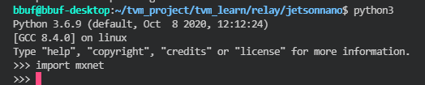
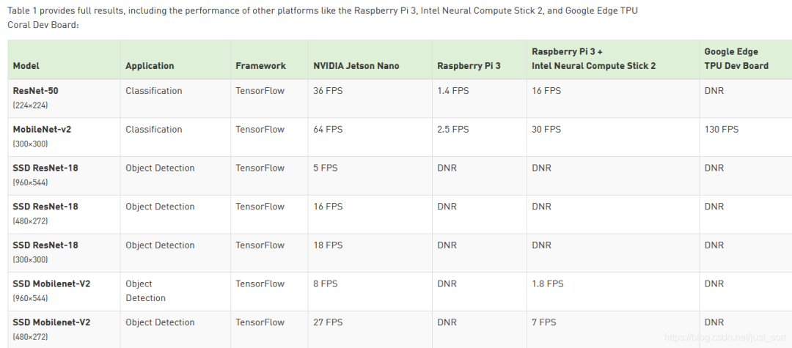

TVM 학습 가이드 (개인 버전)¶
0x0. 머리말¶
최근에 천천치(Tianqi Chen) 고수의 MLC 강의를 대략 다 보았고(겸사겸사 문법과 철자 오류도 좀 고쳐서 미약하나마 기여를 했다 ㅎㅎ), TVM의 최근 발전에 대해 새로운 인식을 갖게 되었다. 이전에 천천치 고수가 「새로운 세대의 딥러닝 컴파일 기술 변혁과 전망」(링크: https://zhuanlan.zhihu.com/p/446935289)에서 TVM Unify, 즉 다층 추상화의 통합이라는 개념을 설명한 바 있다. 여기서 말하는 다층 추상화의 통합에는 구체적으로 AutoTensorization은 하드웨어 명령어 선언과 텐서 프로그램의 연결을 해결하기 위한 것이고, TVM FFI(PackedFunc) 메커니즘은 임의의 op 라이브러리와 runtime 라이브러리 함수를 유연하게 도입하고 각 컴파일 모듈과 사용자 정의 모듈에서 상호 호출할 수 있게 해 준다. TensorIR은 텐서 수준의 프로그램과 하드웨어 텐서 명령어의 통합을 담당한다. Relax (Relax Next)는 Relay의 추가 반복(iteration)으로, first class symbolic shape 지원을 직접 도입한다 (「새로운 세대의 딥러닝 컴파일 기술 변혁과 전망」에서 인용). 그런 다음 이러한 추상화들은 서로 상호작용하고 공동 최적화하여 딥러닝 모델에 대응하는 최종 배포 형태를 구성할 수 있다. 필자가 개인적으로 느끼기에 TVM Unify는 MLIR의 Dialect와 비슷하지만, 이 몇 가지 추상화 간의 직접적인 상호작용 능력은 MLIR의 단계별 lowering에 비해 더 직관적이고 편리하다고 느낀다. 결국 Python First니까(이는 그저 필자가 최근 MLC 강의를 보면서 느낀 것이다). 이 부분에 관심 있는 독자는 천천치 고수의 TVM Unify 소개 원문과 MLC 강의를 참조하기 바란다.
이 글에서는 TVM Unify와 관련된 추상화 및 이전의 누적된 내용들을 결합하여 TVM의 전체 흐름을 다시 정리하려고 한다. frontend, 중간단(graph 최적화 Pass 메커니즘), 코드 생성(Schedule), Runtime, 개발 도구라는 몇 가지 관점에서 소개할 것이다. 필자는 TVM 코드를 정밀하게 읽지는 못했기 때문에, 본문은 가능한 한 하부 C++ 코드의 세부 사항을 다루지 않고 비교적 거시적인 관점에서 현재 TVM의 아키텍처를 명확히 설명하려고 한다. 본문의 모든 참고자료와 아이디어는 주로 필자가 관리하는 이 저장소(https://github.com/BBuf/tvm_mlir_learn)에 수집된 TVM 관련 자료들, TVM 공식 doc과 소스 코드, 그리고 MLC 강의에서 가져온 것이다. 위 저장소는 기본적으로 TVM 중국어 커뮤니티의 대부분의 양질의 블로그나 전문 글들을 수집해 두었으니 TVM에 관심 있는 분들은 자유롭게 다운로드하거나 즐겨찾기에 추가하시고, star도 환영한다.
글쓰는 게 쉽지 않으니 이 글이 도움이 되었다면 좋아요 부탁드립니다 👍. 글에 오류가 있다면 지적해 주시면 수시로 수정하겠다. 다음 계획은 TVM이 하드웨어의 명령어와 어떻게 연결되는지 학습하는 것이다.
0x1. Frontend¶
TVM은 PyTorch, TensorFlow, ONNX 등 모든 머신러닝 프레임워크와 위쪽에서 호환되기 위해 Relay IR을 도입했고, 머신러닝 모델은 TVM에 들어온 후 먼저 Relay IR로 변환된다. 동시에 TVM은 모든 하드웨어와 아래쪽에서 호환되기 위해 Tensor IR(줄여서 TIR)을 도입했고, 모델은 지정된 하드웨어용 소스 코드로 컴파일되기 전에 모두 TIR로 lowering된다. 또한, TVM 커뮤니티는 새로운 세대의 중간 표현인 Relax(차세대 Relay라고도 불리며 현재 아직 main 브랜치에 upstream되지 않음: https://github.com/tlc-pack/relax/tree/relax/python/tvm/relax)를 개발 중이다. Relax는 머리말에서 언급한 TVM Unify를 실현하는 핵심 부분이다. TVM frontend의 아키텍처는 대략 다음과 같이 표현할 수 있다.
 TVM frontend 아키텍처 그림
TVM frontend 아키텍처 그림
이어서 Relay, TIR, Relax라는 서로 다른 frontend 표현들을 각각 소개하겠다.
0x1.1 Tensor IR(TIR)¶
Relay든 새로운 세대의 Relax 중간 표현이든 결국 TIR(하드웨어에 가장 가까운 IR)로 lowering되기 때문에 여기서 먼저 TIR을 소개한다. TIR의 코드는 tvm.tir에 캡슐화되어 있으며, 하나의 TIR은 목표 하드웨어의 소스 코드나 중간 표현, 예를 들어 C++ 소스, CUDA 소스, LLVM IR 등으로 컴파일될 수 있다. 그렇다면 TIR은 어떻게 목표 하드웨어 코드로 컴파일될까? 이는 TIR의 자료구조가 사실상 AST(추상 구문 트리)이고, 이 구문 트리가 변수 선언, 초기화, 변수 계산, 함수 호출 및 제어 흐름(if-else 조건 판단, 루프 등)을 표현할 수 있기 때문이다. 그래서 TIR에 대응하는 AST를 한 번 순회하기만 하면 1대1로 목표 하드웨어로 번역해 낼 수 있다. 다음 그림으로 이해할 수 있다.
 원본 그림 출처: https://zhuanlan.zhihu.com/p/533161438 (저작권 문제 시 삭제 요청)
원본 그림 출처: https://zhuanlan.zhihu.com/p/533161438 (저작권 문제 시 삭제 요청)
위 그림에는 설명이 필요한 몇 가지 세부사항이 있다. 먼저 IRModule이다. IRModule은 머신러닝 컴파일에서 메타 텐서 함수(즉 PrimFunc)의 집합을 보관하는 컨테이너 객체이며, TVM이 컴파일하는 최소 완전 단위이다. TVM의 서로 다른 frontend 표현은 모두 최종적으로 IRModule에 캡슐화되어 컴파일되며, Linux에서 IRModule은 .so 동적 라이브러리이다. 그리고 PrimFunc는 메타 텐서 함수라고 불리며 내부적으로 완전한 TIR AST를 캡슐화하고 있다. IRModule이 컴파일된 후, 각 PrimFunc는 이 동적 라이브러리의 함수 진입점에 대응하므로 하나의 IRModule은 여러 PrimFunc를 가질 수 있다. 위의 Codegen은 사실상 TIR AST에 대해 중위 순회를 한 다음 1대1로 AST Node를 그에 대응하는 TIR Node의 자료구조로 번역하여 콜백 함수 VisitExpr_와 VisitStmt에 전달하는 것이다. VisitExpr_는 Expression Node를 처리하는 데 쓰이고, VisitStmt는 Statement Node를 처리하는 데 쓰인다. 추후 Codegen을 소개할 때 이 변환 과정을 자세히 살펴보겠다.
여기서 추가로 설명할 점은, 0.8 이전의 TVM에서 TIR AST를 선언하려면 Tensor Expression의 컴파일에 의존해야 했다는 것이다. 이제 TVM은 Python AST를 기반으로 새로운 도메인 특정 dialect를 구현해서 우리가 직접 Python으로 TIR AST를 작성할 수 있게 했다. 예를 들어 보겠다.
@tvm.script.ir_module
class MyModule:
@T.prim_func
def mm_relu(A: T.Buffer[(128, 128), "float32"],
B: T.Buffer[(128, 128), "float32"],
C: T.Buffer[(128, 128), "float32"]):
T.func_attr({"global_symbol": "mm_relu", "tir.noalias": True})
Y = T.alloc_buffer((128, 128), dtype="float32")
for i, j, k in T.grid(128, 128, 128):
with T.block("Y"):
vi = T.axis.spatial(128, i)
vj = T.axis.spatial(128, j)
vk = T.axis.reduce(128, k)
with T.init():
Y[vi, vj] = T.float32(0)
Y[vi, vj] = Y[vi, vj] + A[vi, vk] * B[vk, vj]
for i, j in T.grid(128, 128):
with T.block("C"):
vi = T.axis.spatial(128, i)
vj = T.axis.spatial(128, j)
C[vi, vj] = T.max(Y[vi, vj], T.float32(0))
이것이 구현하는 기능에 대응하는 numpy 코드는 다음과 같다.
def lnumpy_mm_relu(A: np.ndarray, B: np.ndarray, C: np.ndarray):
Y = np.empty((128, 128), dtype="float32")
for i in range(128):
for j in range(128):
for k in range(128):
if k == 0:
Y[i, j] = 0
Y[i, j] = Y[i, j] + A[i, k] * B[k, j]
for i in range(128):
for j in range(128):
C[i, j] = max(Y[i, j], 0)
여기서 @tvm.script.ir_module은 데코레이트된 MyModule이 컴파일 대상 IRModule임을 나타내고, @T.prim_func는 데코레이트된 main 함수가 메타 텐서 함수(PrimFunc)임을 나타내며, 이 함수 내부에 정의된 것이 바로 TIR AST이다.
0x1.2 tvm.ir 기반 인프라 이해하기¶
Relay IR과 Relax를 이어서 설명하기 전에 먼저 tvm.ir이라는 추상화를 살펴보자. TIR이든 Relay/Relax IR이든 모두 IRModule이라는 통일된 최소 컴파일 단위에 대응되며, 동시에 그것들이 공유하는 IR 기반 인프라가 있다. 구체적인 구현은 https://github.com/apache/tvm/tree/main/include/tvm/ir와 https://github.com/apache/tvm/tree/main/src/ir 디렉토리에 있다.
 tvm.ir 기반 인프라 파일 구조
tvm.ir 기반 인프라 파일 구조
IR에 있어서 Type과 Expr은 특히 중요한 두 개념이다. Type에는 Int, Float, Double 등의 기본 데이터 타입이 포함되며 함수 타입, Tensor 타입 등 사용자 정의의 복잡한 타입도 포함된다. Expr은 Low-level IR로 직접 매핑될 수 있는 PrimExpr를 포함하고 RelayExpr도 포함한다.
https://github.com/apache/tvm/blob/main/include/tvm/ir/type.h에서 PrimTypeNode의 정의를 볼 수 있다.
/*!
* \brief Primitive data types used in the low-level IR.
*
* PrimType represents POD-values and handles that are
* not automatically managed by the runtime.
*
* \sa PrimType
*/
class PrimTypeNode : public TypeNode {
public:
/*!
* \brief The corresponding dtype field.
*/
runtime::DataType dtype;
...
};
PrimType이 Low-level IR의 기본 데이터 타입에 직접 대응될 수 있음을 알 수 있다. FuncTypeNode의 정의도 찾아볼 수 있다.
/*!
* \brief Function type.
*
* We support polymorphic function type.
* This can be roughly viewed as template function in C++.
*
* \sa FuncType, TypeVar, TypeConstraint
*/
class FuncTypeNode : public TypeNode {
public:
/*! \brief type type of arguments */
Array<Type> arg_types;
/*! \brief The type of return value. */
Type ret_type;
// The following fields are used in polymorphic(template) functions
// For normal functions, the following two fields will be empty.
/*! \brief The type parameters of the function */
Array<TypeVar> type_params;
/*!
* \brief potential constraint the type need to obey
* \note this field is reserved for futher purposes.
*/
Array<TypeConstraint> type_constraints;
...
};
주석에서 볼 수 있듯이 FuncType은 C++의 template function과 유사하며, 함수의 인자 타입, 반환값 타입, template 파라미터, Constraint 등의 정보를 기록한다. 그리고 딥러닝 모델과 매우 밀접하게 결합된 TensorTypeNode 타입도 살펴볼 수 있다.
/*!
* \brief This is the most commonly used type in relay.
* TensorType have a fixed dimension, data type.
*
* The elements of shape can be either IntImm(constant integer),
* or any symbolic integer expression.
* The symbolic integer allows generic shape inference in certain cases.
* \sa TensorType
*/
class TensorTypeNode : public BaseTensorTypeNode {
public:
/*!
* \brief The shape of the tensor,
* represented by PrimExpr(tvm::Expr).
*/
Array<PrimExpr> shape;
/*! \brief The content data type */
DataType dtype;
...
}
TensorTypeNode의 정의를 보면 shape 또한 TensorType의 일부임을 알 수 있다. 따라서 TVM이 type inference를 할 때는 Shape의 추론도 포함된다. 또한 IR 안에서 Shape이 Type의 일부이기 때문에(예를 들어 Tensor[(m, n)]과 Tensor[(m, 4)]는 서로 다른 Type), TVM이 동적 Shape을 지원하기가 매우 어렵다. Expr의 type inference는 동적 Shape을 지원하지 않기 때문이다. 여기서 짚고 넘어가야 할 점은, Relax는 DynTensor라는 새로운 Type을 도입함으로써 동적 Shape의 표현 문제를 잘 해결했다는 것이다. DynTensor가 포함하는 정보는 Dtype과 Shape의 차원이며, Shape 자체의 표현식은 별도로 저장된다. 즉 Tensor[(m, n)]과 Tensor[(_, _)]는 같은 Type이지만, Tensor[(_, _)]와 Tensor[(_, _, _)]는 서로 다른 Type이다. 이로써 동적 Shape을 네이티브로 지원하게 된다. https://github.com/tlc-pack/relax/blob/95035621177fa0be4adfb55c766f030563e515a5/include/tvm/relax/type.h#L78 여기서 DynTensor의 정의를 볼 수 있다.
class DynTensorTypeNode : public BaseTensorTypeNode {
public:
/*!
* \brief The number of dimensions of the tensor, use -1 to denote tensor with unknwon number of
* dimensions.
*/
int ndim; //현재는 shape이 아닌 ndim을 직접 정의함
/*! \brief The content data type, use void to denote the dtype is unknown. */
DataType dtype;
...
};
이어서 Expr의 정의를 살펴보자(https://github.com/apache/tvm/blob/main/include/tvm/ir/expr.h). Expr은 PrimExpr와 RelayExpr로 나뉜다. 그중 PrimExpr는 runtime 시점의 Dtype을 보관하며,
/*!
* \brief Base node of all primitive expressions.
*
* A primitive expression deals with low-level
* POD data types and handles without
* doing life-cycle management for objects.
*
* PrimExpr is used in the low-level code
* optimizations and integer analysis.
*
* \sa PrimExpr
*/
class PrimExprNode : public BaseExprNode {
public:
// runtime::DataType(dtype)는 컴파일 시와 실행 시에 거친 입자 단위의 타입 정보를 제공함.
// PrimExpr 표현식 생성에 동적으로 내장되어 빠른 타입 검사에 활용할 수 있음.
// PrimExpr가 i32 같은 POD value 타입에 해당할 때, dtype만으로 PrimExpr의 Type을 결정하기에 충분함.
// dtype이 DataType::Handle()일 경우 표현식은 더 세분화된 Type에 대응될 수 있으며, lazy 타입 추론을 통해 타입을 얻을 수 있음.
DataType dtype;
}
예를 들어 정수를 표현하는 Expr은 PrimExprNode를 상속해 구현할 수 있다. IntImm은 정수 리터럴 표현식을 나타내므로 int 타입의 value 멤버를 기록한다.
// PrimExprs that are useful as runtime containers.
//
/*!
* \brief Constant integer literals in the program.
* \sa IntImm
*/
class IntImmNode : public PrimExprNode {
public:
/*! \brief the Internal value. */
int64_t value;
...
};
RelayExpr의 정의는 다음과 같다.
/*!
* \brief 모든 비 Prim Expr의 base 노드
*
* RelayExpr는 텐서 타입, 함수, ADT를 일급 시민(first-class citizen)으로 지원함.
* 객체에 해당하는 lifecycle은 언어에 의해 암묵적으로 관리됨.
*
* \sa RelayExpr
*/
class RelayExprNode : public BaseExprNode {
public:
/*!
* \brief 타입 추론(타입 검사)의 결과를 저장.
*
* \note 타입 추론 이전에는 정의되지 않은 상태일 수 있음. 이 값은 직렬화 중에 폐기됨.
*/
mutable Type checked_type_ = Type(nullptr);
/*!
* \return The checked_type
*/
inline const Type& checked_type() const;
/*!
* \brief Expr의 추론된(검사된) 타입이 TTypeNode에 의해 지원되는지 확인하고 반환.
*
* \note 이 Expr의 노드 타입이 TTypeNode가 아니면 함수는 에러를 던짐.
*
* \return 대응하는 TTypeNode 포인터.
* \tparam 우리가 찾는 특정 TypeNode.
*/
template <typename TTypeNode>
inline const TTypeNode* type_as() const;
...
};
전반적으로 보면, 고수준의 Relay, Relax이든 저수준의 TIR이든 결국 모두 여기의 Expr와 Type을 기초로 표현된다. Relay와 TIR에 있어서 그들의 op 정의는 모두 RelayExprNode를 상속한다(https://github.com/apache/tvm/blob/main/include/tvm/ir/op.h#L58). Op의 이름, 타입, 인자, attribute 등의 정의 외에도 특수한 인자 support_level이 있는데, 주석을 보면 현재 Op의 등급을 나타내는 것 같으며 값이 작을수록 해당 Op 타입의 등급이 더 높음을 의미한다(구체적인 작용은 아직 명확하지 않다).
// TODO(tvm-team): migrate low-level intrinsics to use Op
/*!
* \brief Primitive Op(builtin intrinsics)
*
* This data structure stores the meta-data
* about primitive operators that can be invoked via Call.
*
* Low-level IR intrinsics(such as libc.expf) are also
* implemented via Op.
*
* \sa Op
*/
class OpNode : public RelayExprNode {
public:
/*! \brief name of the operator */
String name;
/*! \brief the type of the operator */
mutable FuncType op_type;
/*!
* \brief detailed description of the operator
* This can be used to generate docstring automatically for the operator.
*/
String description;
/* \brief Information of input arguments to the operator */
Array<AttrFieldInfo> arguments;
/*!
* \brief The type key of the attribute field
* This can be empty, in which case it defaults to anything.
*/
String attrs_type_key;
/*!
* \brief attribute type index,
* this field varies in each run and is not exposed to frontend.
*/
uint32_t attrs_type_index{0};
/*!
* \brief number of input arguments to the operator,
* -1 means it is variable length
*/
int32_t num_inputs = -1;
/*!
* \brief support level of the operator,
* The lower the more priority it contains.
* This is in analogies to BLAS levels.
*/
int32_t support_level = 10;
...
};
마지막으로 IRModule의 정의를 살펴보자, https://github.com/apache/tvm/blob/main/include/tvm/ir/module.h#L56. 앞서 IRModule이 TVM 컴파일의 최소 단위라고 했는데, 그 정의에서 일련의 BaseFunc의 매핑임을 알 수 있다(다음 절 Relay 소개에서 그 구현을 살펴볼 것이다).
/*!
* \brief IRModule that holds functions and type definitions.
*
* IRModule is the basic unit for all IR transformations across the stack.
*
* Many operations require access to the global IRModule.
* We pass the IRModule by value in a functional style as an explicit argument,
* but we mutate the Module while optimizing programs.
* \sa IRModule
*/
class IRModuleNode : public Object {
public:
/*! \brief A map from ids to all global functions. */
Map<GlobalVar, BaseFunc> functions;
/*! \brief A map from global type vars to ADT type data. */
Map<GlobalTypeVar, TypeData> type_definitions;
/*! \brief The source map for the module. */
parser::SourceMap source_map;
/* \brief Additional attributes storing meta-data about the module. */
DictAttrs attrs;
...
}
여기서 type_definitions는 ADT에 대한 정의인데, 본문은 Relay에서의 함수형 프로그래밍 개념에는 주목하지 않으므로 ADT와 Let Binding 부분의 개념과 소스 코드는 펼치지 않겠다. 관심 있는 분들은 장웨이(Zhang Wei) 고수의 글이나 공식 문서의 Relay 소개를 참고하여 학습하면 된다: https://zhuanlan.zhihu.com/p/446976730. 뒤에서 Relax IR을 소개할 때 보겠지만, 사실 Relax는 Relay에 비해 마치 TensorFlow의 정적 graph에서 PyTorch의 동적 graph로 전환된 것과 비슷하며, 함수형 프로그래밍 개념보다는 데이터 흐름 graph 개념을 더 강조한다. 필자의 개인적인 생각으로는 사용 편의성도 고려한 듯하다.
0x1.3 Relay IR¶
이어서 Relay IR을 간단히 소개하겠다. 먼저 Relay IR은 현재까지도 TVM과 다른 딥러닝 프레임워크가 연결되는 주요 방식이다. 이전에 「【TVM을 처음부터 배우기】3, ONNX 모델 구조를 기반으로 TVM의 frontend 이해하기」라는 글에서 ONNX를 예로 들어 모델이 어떻게 Relay IR로 변환되는지 소개했는데, 이 Relay IR은 다시 IRModule로 캡슐화되어 TVM에 의해 컴파일된다.
소스 코드 관점에서 보면 Relay의 base class Expr는 tvm.ir 기반 인프라에서 정의된 RelayIR이다(https://github.com/apache/tvm/blob/main/include/tvm/relay/expr.h#L54).
namespace relay {
using Expr = tvm::RelayExpr;
using ExprNode = tvm::RelayExprNode;
using BaseFunc = tvm::BaseFunc;
using BaseFuncNode = tvm::BaseFuncNode;
using GlobalVar = tvm::GlobalVar;
using GlobalVarNode = tvm::GlobalVarNode;
using tvm::PrettyPrint;
그리고 Relay는 ConstantExpr, TupleExpr, VarExpr, CallNodeExpr, LetNodeExpr, IfNodeExpr 등 다양한 Expr를 정의했다. ConstantExprNode의 정의를 볼 수 있는데, 클래스 정의에서는 데이터 data를 선언하고 data의 타입을 반환하는 tensor_type 메서드를 정의하며, is_scalar 함수는 이 상수가 스칼라인지 판단하는 데 쓰인다.
*!
* \brief Constant tensor type.
*/
class ConstantNode : public ExprNode {
public:
/*! \brief The data of the tensor */
runtime::NDArray data;
/*! \return The corresponding tensor type of the data */
TensorType tensor_type() const;
/*! \return Whether it is scalar(rank-0 tensor) */
bool is_scalar() const { return data->ndim == 0; }
...
};
다음으로 VarNode의 정의를 보자. Var는 Relay에서의 변수이며, 정의는 다음과 같다.
/*! \brief Container for Var */
class VarNode : public ExprNode {
public:
/*!
* \brief The unique identifier of the Var.
*
* vid will be preserved for the same Var during type inference
* and other rewritings, while the VarNode might be recreated
* to attach additional information.
* This property can be used to keep track of parameter Var
* information across passes.
*/
Id vid;
/*!
* \brief type annotaion of the variable.
* This field records user provided type annotation of the Var.
* This field is optional and can be None.
*/
Type type_annotation;
/*! \return The name hint of the variable */
const String& name_hint() const { return vid->name_hint; }
};
먼저 Id vid는 변수의 이름을 의미하며, 문자열로 이해할 수 있다. 예를 들어 Relay IR을 시각화할 때 보이는 @로 시작하는 글로벌 변수와 %로 시작하는 로컬 변수가 그것이다. 여기의 type_annotation은 변수의 타입 주석이며, 이 필드는 옵션이다. 다음으로 FunctionNode의 정의를 보자. FunctionNode는 IRModule의 BaseFunc가 Relay에서 구체적으로 구현된 것이다.
/*!
* \brief Relay Function container
* \sa Function
*/
class FunctionNode : public BaseFuncNode {
public:
/*! \brief Function parameters */
tvm::Array<Var> params;
/*!
* \brief
* The expression which represents the computation of the function,
* the expression may reference the parameters, and the type of it
* or sub-expressions may reference the type variables.
*/
Expr body;
/*! \brief User annotated return type of the function. */
Type ret_type;
/*!
* \brief Type parameters of the function.
* Enables the function to vary its type based on these.
* This corresponds to template paramaters in c++'s terminology.
*
* \note This can be usually empty for non-polymorphic functions.
*/
tvm::Array<TypeVar> type_params;
}
FunctionNode의 정의에는 함수 인자, 함수 body, 반환 타입과 인자 타입이 있다. 다른 종류의 Relay 표현식 정의는 살펴보지 않겠으니 관심 있는 독자는 직접 https://github.com/apache/tvm/tree/main/include/tvm/relay에서 읽어 보기 바란다.
이어서 Relay에서의 Op 정의를 분석해 보자. 앞 절의 tvm.ir 기반 인프라에서 이미 언급했듯, Relay든 TIR이든 Op는 모두 일종의 RelayExpr, 즉 OpNode의 정의로 되어 있다. 여기서는 Relay가 정의한 bias_add Op의 예를 통해 이해를 깊게 해 보자.
먼저, BiasAdd Op에 대해 모든 attribute를 기록하는 attribute 타입을 정의한다(https://github.com/apache/tvm/blob/main/include/tvm/relay/attrs/nn.h#L35-L48). attribute 정의 시 설명과 기본값도 설정할 수 있다.
/*!
* \brief Add a 1D Tensor to an axis of a data.
*
* \note bias_add is a special add operator that is in nn
* and enables automatic derivation of bias's shape.
* You can directly use add for more generalized case.
*/
struct BiasAddAttrs : public tvm::AttrsNode<BiasAddAttrs> {
int axis;
TVM_DECLARE_ATTRS(BiasAddAttrs, "relay.attrs.BiasAddAttrs") {
TVM_ATTR_FIELD(axis).describe("The axis to add the bias").set_default(1);
}
};
두 번째 단계로, Bias Add Op에 대한 type inference 함수를 정의한다(https://github.com/apache/tvm/blob/main/src/relay/op/nn/nn.cc#L52).
bool BiasAddRel(const Array<Type>& types, int num_inputs, const Attrs& attrs,
const TypeReporter& reporter) {
ICHECK_EQ(types.size(), 3);
const auto* data = types[0].as<TensorTypeNode>();
if (data == nullptr) return false;
const BiasAddAttrs* param = attrs.as<BiasAddAttrs>();
ICHECK(param != nullptr);
int axis = param->axis;
if (axis < 0) {
axis = data->shape.size() + axis;
}
if (axis >= static_cast<int>(data->shape.size()) || axis < 0) {
reporter->GetDiagCtx().EmitFatal(Diagnostic::Error(reporter->GetSpan())
<< "The axis in bias_add must be in range for the shape; "
<< "attempted to access index " << param->axis << " of "
<< PrettyPrint(data->shape));
return false;
}
// assign output type
reporter->Assign(types[1], TensorType({data->shape[axis]}, data->dtype));
reporter->Assign(types[2], types[0]);
return true;
}
여기서 지정된 연산이 c = nn.bias_add(a , b)라고 할 때, 이 로직은 입력 a의 타입에 따라 b와 c의 타입을 추론하고 다시 쓰는(Assign) 것이다.
세 번째 단계로, nn.BiasAdd Op를 글로벌 테이블에 등록한다(https://github.com/apache/tvm/blob/main/src/relay/op/nn/nn.cc#L88-L103).
RELAY_REGISTER_OP("nn.bias_add")
.describe(R"code(Add bias to an axis of the input.
)code" TVM_ADD_FILELINE)
.set_attrs_type<BiasAddAttrs>()
.set_num_inputs(2)
.add_argument("data", "nD Tensor", "Input data.")
.add_argument("bias", "1D Tensor", "Bias.")
.set_support_level(1)
.add_type_rel("BiasAdd", BiasAddRel)
.set_attr<TOpPattern>("TOpPattern", kBroadcast)
.set_attr<FTVMCompute>("FTVMCompute", [](const Attrs& attrs, const Array<te::Tensor>& inputs,
const Type& out_type) {
const auto* param = attrs.as<BiasAddAttrs>();
return tvm::Array<tvm::te::Tensor>{topi::nn::bias_add(inputs[0], inputs[1], param->axis)};
});
여기서 op name/describe/num_inputs/arguments/support_level은 OpNode 클래스의 멤버에 대응한다. OpNode에는 attrs_type_key와 attrs_type_index 멤버가 있는데 이는 BiasAddAttrs에 대응한다. 그리고 Op의 계산 로직을 기술하는 추가 attribute인 FTVMCompute를 살펴보자. 이는 Op의 입력, attribute 인자, 그리고 출력 타입을 사용하여 이 Op의 계산 로직을 결정한다.
여기까지 보고 의문이 들 수 있다. TVM의 핵심은 계산과 schedule의 분리라는 것을 알고 있는데, Relay Op의 schedule 로직은 어떻게 등록되는가?
TVM은 각 Relay OP에 대해 compute와 schedule을 등록하지 않고, 대신 fcompute와 fschedule을 등록한 후 입력과 attribute 인자, 출력 타입 등에 따라 대응하는 compute와 schedule을 생성한다. 이러한 compute와 schedule의 조합은 OpImplementation에 대응한다(https://github.com/apache/tvm/blob/main/include/tvm/relay/op_strategy.h#L39).
/*!
* \brief Operator implementation that includes compute and schedule function.
*/
class OpImplementationNode : public Object {
public:
/*! \brief Compute function */
FTVMCompute fcompute;
/*! \brief Schedule function */
FTVMSchedule fschedule;
/*! \brief Name of the implementation */
String name;
/*! \brief Priority level */
int plevel;
void VisitAttrs(tvm::AttrVisitor* v) {
v->Visit("name", &name);
v->Visit("plevel", &plevel);
}
static constexpr const char* _type_key = "relay.OpImplementation";
TVM_DECLARE_FINAL_OBJECT_INFO(OpImplementationNode, Object);
};
/*!
* \brief Operator implementation class.
*/
class OpImplementation : public ObjectRef {
public:
/*!
* \brief Invoke the operator compute function.
* \param attrs The attribute of the primitive
* \param inputs The input tensors.
* \param out_type The output type information.
* \return The output compute description of the operator.
*/
TVM_DLL Array<te::Tensor> Compute(const Attrs& attrs, const Array<te::Tensor>& inputs,
const Type& out_type);
/*!
* \brief Build the computation schedule.
* \param attrs The attribute of the node.
* \param outs The output tensors.
* \param target The build target.
* \return The computation schedule.
*/
TVM_DLL te::Schedule Schedule(const Attrs& attrs, const Array<te::Tensor>& outs,
const Target& target);
TVM_DEFINE_OBJECT_REF_METHODS(OpImplementation, ObjectRef, OpImplementationNode);
};
OpImplementation 클래스의 구현으로부터, 그것의 Compute와 Schedule이 fcompute와 fschedule을 기반으로 생성됨을 알 수 있다.
Array<te::Tensor> OpImplementation::Compute(const Attrs& attrs, const Array<te::Tensor>& inputs,
const Type& out_type) {
return (*this)->fcompute(attrs, inputs, out_type);
}
te::Schedule OpImplementation::Schedule(const Attrs& attrs, const Array<te::Tensor>& outs,
const Target& target) {
return (*this)->fschedule(attrs, outs, target);
}
특정 OpImplementation은 특정 조건이 필요하므로, 다시 이러한 Constraint(condition)에 따라 그룹화하며, 각 그룹은 OpSpecialization이라고 불린다(https://github.com/apache/tvm/blob/main/include/tvm/relay/op_strategy.h#L92).
/*!
* \brief Specialized implementations for operators under certain conditions.
*/
class OpSpecializationNode : public Object {
public:
/*! \brief List of implementations. */
Array<OpImplementation> implementations;
/*! \brief Condition to enable the specialization.
* Could be undefined to represent generic case. */
te::SpecializedCondition condition;
void VisitAttrs(tvm::AttrVisitor* v) {
v->Visit("condition", &condition);
v->Visit("implementations", &implementations);
}
static constexpr const char* _type_key = "relay.OpSpecialization";
TVM_DECLARE_FINAL_OBJECT_INFO(OpSpecializationNode, ExprNode);
};
마지막으로 OpStrategy 클래스 하나로 이 Relay Op의 모든 OpImplementation을 기록한다(https://github.com/apache/tvm/blob/main/include/tvm/relay/op_strategy.h#L130).
/*!
* \brief Operator strategy to choose implementation.
*/
class OpStrategyNode : public Object {
public:
/*! \brief List of operator specializations. */
Array<OpSpecialization> specializations;
void VisitAttrs(tvm::AttrVisitor* v) { v->Visit("specializations", &specializations); }
static constexpr const char* _type_key = "relay.OpStrategy";
TVM_DECLARE_FINAL_OBJECT_INFO(OpStrategyNode, ExprNode);
};
/*!
* \brief Operator strategy class.
*/
class OpStrategy : public ObjectRef {
public:
/*!
* \brief Add an implementation.
* \param fcompute Compute function
* \param fschedule Schedule function
* \param name Name of the implementation
* \param plevel Priority level of the implementation
*/
TVM_DLL void AddImplementation(FTVMCompute fcompute, FTVMSchedule fschedule, String name,
int plevel);
TVM_DEFINE_MUTABLE_OBJECT_REF_METHODS(OpStrategy, ObjectRef, OpStrategyNode);
};
여기서 AddImplementation 함수는 FFI 메커니즘을 통해 Python 레벨에서도 호출할 수 있다. 대부분의 Relay Op는 Python 단에서 자신의 Strategy를 등록한다. Relay의 nn.Softmax Op를 예로 들어 보면, 그것의 Strategy(fcompute+fschedule 포함)는 https://github.com/apache/tvm/blob/main/python/tvm/relay/op/strategy/generic.py#L152와 https://github.com/apache/tvm/blob/main/python/tvm/relay/op/strategy/cuda.py#L78-L94에 등록되어 있다.
@override_native_generic_func("softmax_strategy")
def softmax_strategy(attrs, inputs, out_type, target):
"""softmax generic strategy"""
strategy = _op.OpStrategy()
strategy.add_implementation(
wrap_compute_softmax(topi.nn.softmax),
wrap_topi_schedule(topi.generic.schedule_softmax),
name="softmax.generic",
)
return strategy
@softmax_strategy.register(["cuda", "gpu"])
def softmax_strategy_cuda(attrs, inputs, out_type, target):
"""softmax cuda strategy"""
strategy = _op.OpStrategy()
strategy.add_implementation(
wrap_compute_softmax(topi.nn.softmax),
wrap_topi_schedule(topi.cuda.schedule_softmax),
name="softmax.cuda",
)
if target.kind.name == "cuda" and "cudnn" in target.libs:
strategy.add_implementation(
wrap_compute_softmax(topi.cuda.softmax_cudnn),
wrap_topi_schedule(topi.cuda.schedule_softmax_cudnn),
name="softmax.cudnn",
plevel=15,
)
return strategy
그런 다음 https://github.com/apache/tvm/blob/main/python/tvm/relay/op/nn/_nn.py#L40에서 구현한 Strategy를 nn.softmax op에 등록한다.
# softmax
reg.register_strategy("nn.softmax", strategy.softmax_strategy)
사실 Relay Op는 Strategy attribute 외에도 다른 attribute가 있다. 예를 들어 https://github.com/apache/tvm/blob/main/src/relay/op/nn/convolution.cc#L176 여기에서 Op는 이후의 최적화를 위해 FInferCorrectLayout과 TOpPattern attribute를 가질 수 있음을 볼 수 있다(예를 들어 op fusion Pass는 TOpPattern attribute에 의존하고, Ansor의 data layout transform은 FInferCorrectLayout attribute에 의존한다).
RELAY_REGISTER_OP("nn.conv1d")
.describe(R"code(1D convolution layer (e.g. spatial convolution over sequences).
This layer creates a convolution kernel that is convolved
with the layer input to produce a tensor of outputs.
- **data**: This depends on the `layout` parameter. Input is 3D array of shape
(batch_size, in_channels, width) if `layout` is `NCW`.
- **weight**: (channels, in_channels, kernel_size)
- **out**: This depends on the `layout` parameter. Output is 3D array of shape
(batch_size, channels, out_width) if `layout` is `NCW`.
)code" TVM_ADD_FILELINE)
.set_attrs_type<Conv1DAttrs>()
.set_num_inputs(2)
.add_argument("data", "Tensor", "The input tensor.")
.add_argument("weight", "Tensor", "The weight tensor.")
.set_support_level(2)
.add_type_rel("Conv1D", Conv1DRel)
.set_attr<FInferCorrectLayout>("FInferCorrectLayout", ConvInferCorrectLayout<Conv1DAttrs>)
.set_attr<TOpPattern>("TOpPattern", kOutEWiseFusable);
Relay는 일단 여기까지 다루겠다. 함수형 스타일의 IR로서 Relay IR은 현재 TVM과 다른 딥러닝 프레임워크 간의 다리 역할을 하고 있고, 수년간 유지보수되어 완성도가 비교적 높다(TensorFlow, PyTorch, Paddle, OneFlow 등 주류 딥러닝 프레임워크를 지원). 그러나 Relay의 단점은 TVM의 tvm.ir 기반 인프라를 공유하기 때문에 Dynamic Shape을 지원할 수 없어 Relay IR도 Dynamic Shape을 지원할 수 없다는 점, 그리고 Relay IR의 함수형 프로그래밍 스타일이 데이터 흐름 graph 형태의 계산 graph에 비해 그다지 직관적이지 않다는 점이다.
0x1.4 Relax¶
Relax frontend는 아직 정식으로 apache tvm main 브랜치에 upstream되지 않았기 때문에 여기서는 소스 코드 관점에서 살펴보지는 않겠다. Relax의 wiki에서 알 수 있는 것은 Relax가 동적 Shape을 네이티브로 지원할 뿐 아니라(DynTensor의 추상화를 제공하고 Shape을 Tensor의 type에서 분리시켜 구현), TVM Unify 추상화를 만들었다는 점이다. 즉, 천천치가 「새로운 세대의 딥러닝 컴파일 기술 변혁과 전망」에서 언급한 것으로, 이 특징은 서로 다른 추상화 간에 상호작용과 공동 최적화를 가능하게 한다. 여기에 언급된 추상화에는 하드웨어 명령어 선언과 텐서 프로그램의 연결을 해결하는 AutoTensorization, 임의의 op 라이브러리와 runtime 라이브러리 함수를 유연하게 도입하고 컴파일 모듈과 사용자 정의 모듈에서 상호 호출할 수 있게 해주는 TVM FFI(PackedFunc) 메커니즘, 텐서 수준의 프로그램과 하드웨어 텐서 명령어의 통합을 담당하는 TensorIR, 그리고 여기의 Relax(Relax Next)가 포함된다. 다음 예시를 통해 체감해 보자.
import tvm.script
from tvm.script import tir as T, relax as R
@tvm.script.ir_module
class MyIRModule:
@T.prim_func
def tir_exp_func(x: T.handle, y: T.handle): ## <= D2
X = T.match_buffer(x, (n,), "float32")
Y = T.match_buffer(y, (n,), "float32")
with T.grid(n) as i:
Y[i] = T.exp(X[i])
@R.function
def relax_func(x: R.Tensor[(n, k), "f32"], w: R.Tensor[_, "f32"]):
# n, k above are implicitly defined by the signature
# so we will be able to refer to n, k in the later part of the program
with R.dataflow(): ### <= D0
lv0 = R.match_shape(w, (k, m)) ## <= D1
lv1: R.Tensor[(n, m), "f32"] = R.dot(x, lv0)
lv2: R.Tensor[(n * m,), "f32"] = R.flatten(lv1) ## <= D1
lv3: R.Shape = (n * m,) ## <= D1
gv0: R.Tensor[lv2, "f32"] = R.call_tir(lv2, tir_exp_func, [lv3]) ## <= D2
R.outputs(gv0)
R.call_packed("custom_inplace_update", gv0) ## <= D0, D2
return gv0
여기에 표시된 코드 조각은 Relax wiki에서 제공한 것임을 유의하라. 아직 main 브랜치에 upstream되지 않았기 때문에 그 사용법이 약간 변경될 수도 있다. 이 코드에서 Relax는 Relax Function과 TIR Function을 같은 IRModule(최소 컴파일 단위)에 두었음을 알 수 있다. 즉, 어느 시점에서든 우리는 이 두 가지 다른 수준의 IR을 동시에 가져와 수정(또는 공동 최적화)할 수 있다. 이는 컴파일러 패러다임에서 lowering으로 인해 고수준 의미 정보가 소실되어 공동 최적화가 불가능했던 문제에서 벗어나게 해 준다. 지후(Zhihu)에서 시위안(Siyuan)이라는 분이 매우 고전적인 예를 들어 주었는데, 여기에 그 답변 링크(https://www.zhihu.com/question/522101384/answer/2391922144)를 첨부하고 스크린샷으로 설명한다.
1. Unified Abstraction
개인적으로는 이 점이 Relax에서 가장 흥미로운 기능이라고 생각한다. 근본적으로 연산자(op) 계층의 장벽을 깨뜨렸기 때문이다. 실제 경험상 TVM(및 다른 일부 컴파일러들)은 오랫동안 하위 계층의 정보를 이용해 계산 그래프를 수정함으로써 더 나은 성능을 얻어왔다.
1. 가장 단순한 예는 연산자 융합(fusion)이다. 연산자 사이의 중간 결과가 캐시에 남아 있을 때 더 좋은 성능을 얻을 수 있다는 것을 알고 있기 때문이다.
2. 조금 더 복잡한 예는 Ansor가 도입한 weight layout rewrite이다. auto-tuning 이후 가장 효율적인 weight layout을 분석해내고, 컴파일 시점에 이를 다시 작성(rewrite)하여 실행 효율을 높인다.
3. 더 복잡한 경우로는 일반적인 layout rewrite(예: NCHW를 자동으로 NCHWc로 변환)와 memory stitching이 있다.
하지만 이러한 최적화들은 모두 다음과 같은 문제와 관련된다.
1. 계산 그래프 IR을 어떻게 수정할 것인가?
2. low-level IR(TIR)을 어떻게 수정할 것인가?
전통적인 방법은 먼저 그래프 IR을 수정한 뒤, 그 그래프 IR로부터 low-level IR을 생성하는 것이다. 하지만 이 방식에는 두 가지 한계가 있다.
⸻
1. low-level IR의 정보를 어떻게 그래프 IR 수정에 활용할 것인가?
Ansor의 예를 들면, 어떤 연산자가 선호하는(weight-preferred) layout은 tuning이 끝난 뒤에야 알 수 있다. 그런데 이 시점에서는 그래프 IR이 이미 lower되어 버렸기 때문에 더 이상 수정할 수 없다.
그래서 Ansor는 매우 교묘한(tricky) 방법을 사용했다. 먼저 한 번 lowering을 수행해 tuning을 완료한 뒤, 그 결과 정보를 가지고 다시 한 번 lowering을 수행하는 방식이다.
2. 연산자 계층의 추상화는 완전히 사람이 정의한 것이다.
프로그램이 자동으로 분석할 수 있는 것이 아니라, 모든 정보가 프로그래머에 의해 주석(annotation) 형태로 제공되어야 한다.
예를 들어 어떤 연산자가 injective인지, fusion 가능한지 여부는 사람이 직접 표시해야 한다.
연산자가 점점 많아질수록 최적화를 위해 필요한 주석 정보도 계속 늘어나며, 그 비용은 매우 커진다.
⸻
이 두 문제는 Relax에서 해결할 수 있다.
왜냐하면 Relax는 모든 Relax Function과 TIR Function을 하나의 IRModule 안에 함께 넣어두기 때문이다.
다시 말해, 우리는 어느 단계(any stage)에서든 고수준 정보와 저수준 정보 모두를 얻을 수 있으며, 두 종류의 IR을 동시에 분석하고 수정할 수 있다.
예를 들어 연산자의 계산 패턴은 사람이 직접 주석을 달 필요 없이, 해당 연산에 대응되는 TIR 구현을 직접 분석하여 알아낼 수 있다.
또한 auto-tuning이 끝난 뒤에 그래프 IR을 수정할 수도 있으며, 이를 위해 lowering을 다시 한 번 수행할 필요가 없다.
D0: 데이터 흐름 블록을 일급(first priority) 구조로¶
대부분의 relax_func는 with R.dataflow() 구조 안에 캡슐화된다. 데이터 흐름 블록 아래의 모든 작업은 부작용(side effect)이 없으며, 고수준 제어 흐름(예: if-then-else)이나 중첩 영역(nested region)을 포함하지 않는다.
하나의 데이터 흐름 블록은 사실상 프로그램에 임베드된 계산 graph로 볼 수 있다. 데이터 흐름 블록 내에서 대부분의 binding된 변수들(위 Relax 스크립트의 lv0, lv1, lv2, lv3)은 local이라는 점에 유의하라. 이는 그것들이 블록 내에서만 가시적이라는 의미이다. 이러한 변수들은 계산 graph의 "내부 노드"로 볼 수 있다. 우리는 변수를 출력으로 표시할 수 있는데(gv0), 이 경우 해당 변수는 프로그램의 후반부에서도 가시적이게 된다. 이러한 출력 변수들은 계산 graph의 출력 노드로 볼 수 있다.
R.call_packed("custom_inplace_update", gv0)는 데이터 흐름 블록 밖에 있다는 점에 유의하라. 데이터 흐름 블록 밖의 모든 것은 부작용을 일으킬 수 있다. 따라서 더 신중한 분석을 거치지 않으면 우리는 위상 정렬(topological order)에 따라 이 binding들을 재정렬하는 것과 같은 최적화를 수행할 수 없다. 우리는 대부분의 최적화가 데이터 흐름 블록 수준에서 일어날 것으로 예상한다. 이러한 최적화는 계산 graph 개념에 익숙한 ML 엔지니어에 의해 수행될 수 있다. 효과적인 구성 요소를 분리하고 표현할 수 있는 능력은 또한 그것들이 필요한 곳에 더 높은 수준의 최적화 기회를 제공한다.
D1: shape 추론을 일급 계산으로¶
shape 추론은 동적 모델 워크로드에 매우 중요하다. 동적 shape 환경에서는 일반적으로 계산을 실행하기 전에 중간 텐서의 shape을 계산해야 한다. 또한 shape 자체가 데이터에 의존하는 경우(예: unique op)도 처리해야 한다. 마지막으로, 대부분의 동적 shape 워크로드는 여전히 많은 (부분적인) 정적 shape을 포함하고 있으며, 이상적으로는 이러한 정적 shape 정보를 활용하여 최적화하기를 바란다.
from tvm.script import relax as R
@R.function
def shape_example(x: R.Tensor[(n, 2, 2), "f32"]):
with R.dataflow():
# symbolic and static shape deduction
lv0: R.Tensor[(n, 4), "f32"] = R.reshape(x, (n, 4))
lv1: R.Tensor[(n * 4,), "f32"] = R.flatten(lv0)
lv2: R.Shape = (n * 4,)
# external opaque shape function
lv3: R.Shape = R.call_packed("myshape_func", lv2)
lv4: R.Tensor[lv3, "f32"] = R.call_tir(lv3, "custom_func", [lv1])
# data dependent case
lv5: R.Tensor[_, "f32"] = R.unique(lv4)
# re-match shape
lv6: R.Tensor[(m,), "f32"] = R.match_shape(lv5, (m,))
gv0: R.Tensor[(m,), "f32"] = R.exp(lv6)
R.outputs(gv0)
return gv0
위 프로그램은 shape 추론의 전형적인 시나리오를 다룬다(주석에서 표시됨). 중요한 것은, shape이 이제 텐서 값과 함께 계산의 일부가 되었다는 점이다. 이는 shape의 계산이 runtime에 일어날 수 있다는 사실을 반영한다.
텍스트 형식의 type annotation lv0: R.Tensor[(n, 4), "f32"]는 각 Shape의 값을 보여 준다. 이는 단지 syntactic sugar일 뿐이다. IR 관점에서 보면 Shape 필드 (n, 4)는 lv0.checked_type의 일부가 아니다. lv0의 type은 DynTensor(rank=2, dtype="f32")이며, Shape은 각 Expr에 부착된 특수한 값 필드이다. 우리가 이러한 명시적인 선택을 한 것은 type inference를 단순화하기 위해서이며, 그래야 우리는 완전 의존 type(fully dependent type)의 영역에 들어갈 필요가 없게 된다.
symbolic shape 계산과 관련된 두 가지 핵심 구조가 있다.
D1a: match_shape¶
value = match_shape(lhs, pattern)
shape 매칭 구조는 lhs 값과 pattern(정수 symbolic 표현식)을 받는다. 두 가지 오버로드된 의미가 있다.
- lhs가 Tensor일 때, lhs.shape를 pattern에 매칭시킨다. pattern에 처음 등장하는 경우 대응하는 정수 symbolic 변수를 채우고, lhs와 동일하지만 shape 필드가 pattern으로 업데이트된 Tensor를 반환한다.
- lhs는 또한 pattern에 직접 매칭되는 Shape일 수도 있다. 이는 어떤 텐서 값에도 대응하지 않는 Shape 함수를 분리하고 싶을 때 유용하다.
예를 들어,
from tvm.script import relax as R
@R.function
def shape_example(x: R.Tensor[_, "f32"], y: R.Tensor[_, "f32"]):
with R.dataflow():
# the match shape defines n, m because it appears for the first time
lv0: R.Tensor[(n, m)] = R.match_shape(x, (n, m))
# the second occurance of n, m will translate into an assertion
# that y's shape equals (n, m)
lv1: R.Tensor[(n, m)] = R.match_shape(y, (n, m))
# we can also call match_shape on shape expressions
lv2: Shape = R.match_shape(R.shape_of(y), (n, m))
특히 여기 lv2의 Shape는 (n, m)으로 설정되며 match_shape의 lhs는 Tensor가 아니라 Shape 표현식이라는 점에 주의하라.
D1b. 정수 심볼 튜플로 Shape 구성하기¶
n과 m 같은 symbolic 정수를 얻은 후, 우리는 그들을 다시 조합하여 하나의 Expr를 형성할 수 있다. 임의의 symbolic 정수 표현식의 튜플은 Relax에서 Shape 값으로 인식될 수 있다. 예를 들어 (n, m)은 Shape를 나타내는 값이다.
Shape 전파의 방법¶
중요한 점은, 이제 Shape가 계산 과정 값의 일부가 되었다는 것이다. 컴파일 타임의 Shape 추론은 Shape 위에서 일어나는 작업의 상수 폴딩(constant folding)으로 볼 수 있다. 프로그램에는 Shape 계산을 위한 여러 방법이 있다.
- 방법 1: symbolic shape 전파. 위 스크립트의 n과 m처럼 Shape를 symbolic 정수로 분해한 다음, symbolic 정수의 표현식을 사용해 Shape의 계산을 표현할 수 있다, 예를 들어
(n*4). 주의할 점은, 정적 shape은 symbolic 정수의 특수한 경우이며, 우리는 symbolic 정수를 다시 조합해 새로운 Shape, 예를 들어(n*4)를 만들 수 있다. - 방법 2: 불투명한(opaque) Shape 함수 호출. 우리는 또한
myshape_func(앞앞 Relax 스크립트 참조) 같은 불투명한 Shape 함수를 구현할 수 있다. 이러한 불투명한 Shape 함수는 runtime Shape 함수를 빠르게 해킹할 때 유용한 fallback이다(여기서는 수동 개입을 추가한 shape 추론을 의미하는 듯하다). - 방법 3: 데이터에 의존하는 Shape(예: Unique)에 대해 우리는 단순히 runtime 호출
f(inputs)->outpus로 미루며, 이 호출은 입력 텐서를 받아 출력 텐서를 할당하고 반환한다. 그런 다음 우리는 match_shape 구조를 통해 Tensor 값에서 lv5의 shape을 얻을 수 있다(앞앞 Relax 스크립트 참조).
Pass 작성에 대한 함의¶
많은 최적화 Pass들은 Shape 정보를 알아야 한다. 이미 많은 Shape이 (n, 4)와 같이 symbolic할 수 있으므로, 이상적인 최적화 Pass는 symbolic 정보를 활용하기 위해 좀 더 일반화되어야 한다. 예를 들어 위 스크립트에서 우리는 모든 n이 같은 값에 대응한다는 것을 안다. 이런 Constraint은 매우 유용하다. symbolic 정수(앞서 말한 tir.PrimExpr에 대응)는 동적으로 상수 폴딩을 수행하므로, 입력이 정적 shape일 때 계산 결과도 정수 상수로 동적으로 폴딩되어야 하며, 이는 우리가 정적 shape 최적화를 수행할 때 의존하는 속성을 유지한다. 이제 우리가 튜플 (n, 4)에서 정적과 symbolic이 혼합된 Shape를 표현할 수 있으므로, 정적 정보를 활용한 추가적인 최적화를 시도할 수 있다.
D2: TensorIR 및 PackedFunc와의 직접적인 상호작용¶
우리가 내린 마지막 핵심 설계 결정은 고수준 IR이 저수준 TensorIR과 PackedFunc를 직접 상호작용하고 호출할 수 있도록 하는 것이다. TensorIR 함수와 많은 외부 라이브러리는 destination passing 규약을 채택한다(우리는 출력을 명시적으로 할당해서 함수의 인자로 전달해야 한다). 우리는 이 규약을 표현하기 위해 dps(destination passing)를 사용한다. dps는 저수준 ML 최적화에서 매우 중요한데, 이는 가능한 경우 한 번에 전역적으로 중간 저장소를 할당하고 능동적인 메모리 할당 없이 계산을 수행할 수 있게 해 주기 때문이다.
dps 함수를 호출한다는 것은 호출 후 결과가 함수의 반환값이 아니라 함수의 인자(예: 아래 예시의 result)를 통해 다시 전달된다는 것을 의미한다.
// not destination passing
int func(int x) {
return 1;
}
// destination passing
void func(int x, int *result) {
*result = 1;
}
dps 스타일은 본질적으로 (출력의) 변형(mutation)을 의미한다. 우리는 호출을 Relax Dataflow에 연결할 방법이 필요하다(이 절 첫 부분의 스크립트를 살펴볼 수 있다). 그래야 일련의 tir 호출에 대해 계산 graph 스타일의 재작성을 수행할 수 있다.
D2a. call_tir¶
call_tir는 호출을 Relax Dataflow에 연결하는 인라인 함수다. 그 명명의 의미는 "tir 변환을 호출한다"이다.
def call_tir(output_shape: Shape, lowlevel_func: Expr, inputs: Tuple[Expr]) -> Expr:
"""Example code to demonstrate the semantics of call tir"""
out_tensor = alloc_tensor(output_shape, current_expr.dtype)
lowlevel_func(*inputs, out_tensor)
return out_tensor
call_tir는 출력 shape, lowlevel_func(packed func, tir PrimFunc 가능)와 입력 튜플을 받는다. call_tir의 의미는 위 코드를 통해 보여줄 수 있다. 주목할 점은, 우리가 call_tir를 lowering할 때 출력 텐서 할당을 별도로 선택할 필요가 없다는 것이다. 컴파일러는 중간 텐서의 메모리 계획을 만들어 효과적으로 재사용할 수 있도록 그것들을 연결할 수 있다.
또한 call_tir 인라인 함수의 output_shape 파라미터는 불투명한 shape 값, symbolic 정수 튜플 또는 상수 shape일 수 있다(동적 Shape 지원).
lowlevel_func는 다음 시그니처를 가진 어떤 함수든 될 수 있다: fn(input0, input1,... out0, out1...)
가장 일반적인 두 가지 경우는 (1) TIR 함수 (2) 불투명한 packed func다.
구현 노트¶
call_tir는 IR 변경의 영향을 최소화하기 위해 (독립된 IR 노드가 아닌) 특수한 인라인 함수(Op)로 구현될 수 있다. AST 관점에서 보면 다음과 같이 된다.
Call(op=Op::Get("relax.call_tir"), shape, lowlevel_func, inputs)
이는 또한 IR 자체를 변경하지 않고 call_tir의 향후 반복(iteration)을 가능하게 한다. 이는 특정 시점에 다음을 필요로 할 수 있다.
- 같은 array에서 여러 변형 시퀀스(concat 관련 op의 경우) 활성화
- symbolic Shape 힌트를 fusion된 op로 전달하는 것을 활성화
통합에 대한 함의¶
D2는 우리가 더 낮은 수준의 추상화를 고수준 추상화(R.function)에 직접 임베드할 수 있게 해 준다. 이는 다음과 같은 (이에 국한되지 않는) 많은 기회를 열어 준다.
- 서로 다른 전략을 사용해 프로그램의 다른 부분을 점진적으로 lowering.
- 우리는 call_tir 노드를 AST의 일부로 최적화한 다음, data layout 정보 같은 핵심 정보를 high level의 IR로 다시 가져가서 더 좋은 최적화 결과를 얻을 수 있다.
- BYOC 흐름을 변환의 자연스러운 일부로 사용(graph의 일부를 불투명 packed function 호출로 변환).
여기서 두 번째 점은 사실 Ansor가 도입한 weight layout rewrite에 대응한다. 즉, op auto-tuning 후에 가장 효율적인 weight layout을 분석하고 컴파일 시 다시 작성하여 runtime 효율을 높이는 것이다. 그렇다면 Relax 이전에는 이 작업을 어떻게 완료했을까? 한 op에 더 적합한 weight layout은 tuning 후에야 알 수 있는데, 그때는 graph IR이 이미 lowering되어서 수정할 수 없다. 그래서 Ansor는 매우 트리키한 방법을 사용했는데, 먼저 한 번 lowering해서 tuning을 마치고, 그 정보를 가지고 다시 lowering하는 것이다. 그래서 Relax는 lowering의 경계 분리를 제거함으로써 이 문제를 더 잘 해결할 수 있다.
D2b. Packed function 호출¶
우리는 R.call_packed를 사용해 Packed Func에 대한 호출을 지시한다. AST 관점에서 보면 추가적인 호출 노드를 도입할 필요 없이 ExternFunc 구조를 도입할 수 있는데, 이는 우리가 호출할 수 있는 packed function을 나타낸다.
Call(op=ExternFunc("my_packed_func"), *args)
R.call_packed는 단지 위의 AST 노드를 표현하는 syntactic sugar로 사용된다. 이를 통해 우리는 모든 호출을 통일할 수 있다. 또한 필요할 때 packed function과 call_tir를 혼합할 수 있게 해 준다.
lv4: R.Tensor[lv3, "f32"] = R.call_tir(lv3, "custom_func", [lv1])
이는 다음 AST에 대응한다.
Call(op=Op::Get("relax.call_tir"), shape, ExternFunc("my_packed_func"), [lv1])
저수준 라이브러리(예: cudnn)를 메모리 할당 호출 없이 직접 고수준에 통합하고 싶을 때, 외부 packed function 위의 CallTIR이 유용할 것이다.
이 점에 대해 MLC 강의에서도 시연이 있다. dlpack을 통해 PyTorch의 Op를 호출해서 최적화하는 것인데, 관심 있는 독자는 살펴보기 바란다. 링크: https://mlc.ai/zh/chapter_end_to_end/index.html.
여기서 간단히 정리하자면, Relax는 차세대 Relay로서 동적 Shape를 네이티브로 지원할 뿐 아니라 사용 경험이 PyTorch의 데이터 흐름 graph 프로그래밍 방식에 더 가까워졌다. 특히 중요한 것은 Relax가 TVM Unify를 위해 봉사하고 있다는 점이다. TensorIR 추상화, TVMFFI(Packed Func)와의 상호작용(MLC 튜토리얼을 통해 알 수 있듯 Auto Schedule과의 상호작용도 가능)을 통해 TVM Unify의 목표를 실현한다.
물론 필자가 현재 보고 있는 Relax의 미흡한 점도 짚자면, 그것은 Relax가 현재 다른 딥러닝 프레임워크와의 연결이 충분히 완비되지 않았다는 점이다. 만약 Relay에서 Relax로의 자동 변환을 구현할 수 있다면 이는 정말 고무적인 소식이 될 것이며, 우리의 마이그레이션 비용을 최소화할 수 있다.
0x3. Tensor Expression(TE)¶
다시 첫머리의 그림으로 돌아가 보자.
 TVM frontend 아키텍처 그림
TVM frontend 아키텍처 그림
우리는 Relay에서 TIR로 가는 두 가지 경로가 있음을 발견할 수 있다. 첫 번째는 직접 TIR로 가는 것인데, 예를 들어 PrimExpr에서 파생된 노드, 가령 IntImmNode는 TIR로 직접 매핑될 수 있다. 다른 하나는 Relay에서 Conv 같은 Op의 계산 로직이 TOPI로 표현된다는 것이다. TOPI는 TVM 자체의 op 라이브러리이며, 이러한 op들은 TE를 통해 표현될 수 있다.
이외에도, 앞서 frontend의 Relax 소개에서 본 것처럼 TIR AST를 직접 작성하는 방법으로 한 가지는 TVMScript를 사용해 추상적인 계산 로직을 표현하는 것이고, 다른 하나는 TE를 통하는 것이다. TE 코드는 목표 하드웨어의 코드로 직접 컴파일될 수 없고, 먼저 TIR의 메타 텐서 함수로 lowering된 후에 컴파일될 수 있다. 사실 필자는 이전에 「【TVM 3대 최적화 순례】X86에서 일반 행렬 곱셈 op를 90배 가속하기」 같은 Schedule 관련 글을 몇 편 썼는데, 그것들도 모두 TE를 기반으로 한다. 이로써 TE는 TIR AST를 작성하는 또 다른 방법을 제공할 뿐 아니라, TIR AST를 변환하는 일련의 Schedule도 제공한다는 것을 알 수 있다. 0x5절에서 Schedule을 다룰 것이다.
먼저 TVM Script 기반으로 작성된 이 벡터 덧셈 예시를 보자.
@tvm.script.ir_module
class MyModule:
@T.prim_func
def main(a: T.handle, b: T.handle):
# We exchange data between function by handles, which are similar to pointer.
T.func_attr({"global_symbol": "main", "tir.noalias": True})
# Create buffer from handles.
A = T.match_buffer(a, (8,), dtype="float32")
B = T.match_buffer(b, (8,), dtype="float32")
for i in range(8):
# A block is an abstraction for computation.
with T.block("B"):
# Define a spatial block iterator and bind it to value i.
vi = T.axis.spatial(8, i)
B[vi] = A[vi] + 1.0
ir_module = MyModule
print(type(ir_module))
print(ir_module.script())
출력:
<class 'tvm.ir.module.IRModule'>
# from tvm.script import tir as T
@tvm.script.ir_module
class Module:
@T.prim_func
def main(A: T.Buffer[8, "float32"], B: T.Buffer[8, "float32"]) -> None:
# function attr dict
T.func_attr({"global_symbol": "main", "tir.noalias": True})
# body
# with T.block("root")
for i in T.serial(8):
with T.block("B"):
vi = T.axis.spatial(8, i)
T.reads(A[vi])
T.writes(B[vi])
B[vi] = A[vi] + T.float32(1)
다음으로 TE DSL을 사용해 이 벡터 덧셈을 표현해 보자.
from tvm import te
A = te.placeholder((8,), dtype="float32", name="A")
B = te.compute((8,), lambda *i: A(*i) + 1.0, name="B")
func = te.create_prim_func([A, B])
ir_module_from_te = IRModule({"main": func})
print(ir_module_from_te.script())
출력:
# from tvm.script import tir as T
@tvm.script.ir_module
class Module:
@T.prim_func
def main(A: T.Buffer[8, "float32"], B: T.Buffer[8, "float32"]) -> None:
# function attr dict
T.func_attr({"global_symbol": "main", "tir.noalias": True})
# body
# with T.block("root")
for i0 in T.serial(8):
with T.block("B"):
i0_1 = T.axis.spatial(8, i0)
T.reads(A[i0_1])
T.writes(B[i0_1])
B[i0_1] = A[i0_1] + T.float32(1)
두 출력으로부터 우리는 결국 만들어진 IRModule이 사실상 완전히 같다는 것을 볼 수 있다. 그리고 이 IRModule은 목표 하드웨어에서 실행 가능한 코드로 컴파일될 수 있다. TE가 어떻게 TIR로 컴파일되는지 더 깊이 알고 싶다면 「TVM 자체 자초지종(3): TE의 개념과 컴파일 원리」를 읽어 보자. 여기서는 작성자의 글에 있는 핵심 그림을 빌려 간단히 설명한다.
 출처: https://zhuanlan.zhihu.com/p/534313816 작성자: Kord (저작권 문제 시 삭제 요청)
출처: https://zhuanlan.zhihu.com/p/534313816 작성자: Kord (저작권 문제 시 삭제 요청)
위에서 아래로 보면, 여기의 List[PrimExpr]는 이 lambda 표현식의 PrimExpr 집합이다. 첫 번째 PrimExpr는 A(*i), 두 번째 PrimExpr는 1.0이며, +는 TIR의 ExprOp에 대응한다(https://github.com/apache/tvm/blob/main/python/tvm/tir/expr.py#L66). Expr가 1개 이상의 PrimExpr에 작용해 얻는 결과 역시 PrimExpr다. 사실 여기 List[PrimExpr]는 이 lambda 표현식의 AST 표현에 대응한다. 다음으로 te.compute의 코드를 보자(https://github.com/apache/tvm/blob/main/python/tvm/tir/expr.py#L66).
def compute(shape, fcompute, name="compute", tag="", attrs=None, varargs_names=None):
"""Construct a new tensor by computing over the shape domain.
The compute rule is result[axis] = fcompute(axis)
Parameters
----------
shape: Tuple of Expr
The shape of the tensor
fcompute: lambda function of indices-> value
Specifies the input source expression
name: str, optional
The name hint of the tensor
tag: str, optional
Additional tag information about the compute.
attrs: dict, optional
The additional auxiliary attributes about the compute.
varargs_names: list, optional
The names to use for each of the varargs. If not supplied, the varargs
will be called i1, i2, ...
Returns
-------
tensor: Tensor
The created tensor
"""
if _tag.TagScope.get_current() is not None:
if tag != "":
raise ValueError("nested tag is not allowed for now")
tag = _tag.TagScope.get_current().tag
shape = (shape,) if isinstance(shape, tvm.tir.PrimExpr) else shape
# for python3
shape = tuple([int(s) if isinstance(s, float) else s for s in shape])
out_ndim = len(shape)
# lambda 표현식에 입력으로 주어지는 인자 리스트를 가져옴
argspec = inspect.getfullargspec(fcompute)
if len(argspec.args) == 0 and argspec.varargs is None:
arg_names = ["i%d" % i for i in range(out_ndim)]
elif argspec.varargs is not None:
# if there is a varargs, it takes the remaining dimensions of out_ndim
num_remaining_args = out_ndim - len(argspec.args)
if varargs_names is not None:
if len(varargs_names) != num_remaining_args:
raise RuntimeError(
f"Number of varargs ({num_remaining_args}) does not match number"
f"of varargs_names ({len(varargs_names)})"
)
arg_names = argspec.args + varargs_names
else:
arg_names = argspec.args + [f"i{i}" for i in range(out_ndim - len(argspec.args))]
else:
arg_names = argspec.args
# if there are fewer args than out dimensions, the remaining dimensions
# are implicitly broadcast
out_ndim = len(arg_names)
assert argspec.varkw is None, "Variable keyword arguments not supported in fcompute"
assert argspec.defaults is None, "Default arguments not supported in fcompute"
assert len(argspec.kwonlyargs) == 0, "Keyword arguments are not supported in fcompute"
if out_ndim != len(arg_names):
raise ValueError(
"Number of args to fcompute does not match dimension, "
"args=%d, dimension=%d" % (len(arg_names), out_ndim)
)
dim_var = [tvm.tir.IterVar((0, s), x, 0) for x, s in zip(arg_names, shape[:out_ndim])]
# lambda 표현식 기반으로 List[PrimExpr] 생성
body = fcompute(*[v.var for v in dim_var])
# List[PrimExpr]를 TensorComputeOp에 전달해 계산하고 tvm.te.Tensor를 반환
if isinstance(body, _tensor.TensorIntrinCall):
for i, s in enumerate(shape[out_ndim:]):
var_name = "ax" + str(i)
dim_var.append(tvm.tir.IterVar((0, s), var_name, 4))
op_node = _ffi_api.TensorComputeOp(
name,
tag,
dim_var,
body.reduce_axis,
out_ndim,
body.intrin,
body.tensors,
body.regions,
body.scalar_inputs,
)
else:
if not isinstance(body, (list, tuple)):
body = [body]
body = convert(body)
op_node = _ffi_api.ComputeOp(name, tag, attrs, dim_var, body)
num = op_node.num_outputs
outputs = tuple(op_node.output(i) for i in range(num))
return outputs[0] if num == 1 else outputs
compute의 구현에서 마지막으로 반환되는 것은 TensorComputeOp 객체의 output() 멤버이다(역시 tvm.te.Tensor). 동시에 이 tvm.te.Tensor는 이 TensorComputeOp 객체를 포함한다(.op로 접근 가능, https://github.com/apache/tvm/blob/main/python/tvm/te/tensor.py#L108에서 볼 수 있다).
마지막으로 func = te.create_prim_func([A, B]) 이 한 줄의 코드가 TE에서 TIR로의 변환을 완료한다. 이 api에 대응하는 c++ 구현은 https://github.com/apache/tvm/blob/v0.8.0/src/te/operation/create_primfunc.cc#L238에 있으니 관심 있는 독자는 직접 살펴보자. 기본 흐름은 모든 Operation에 대응하는 PrimExpr AST를 함께 연결하여 AST Graph를 구성한 후, Post-DFS 알고리즘으로 이 AST Graph를 순회하면서 각 Operation을 처리하여 대응하는 TIR 노드를 생성하고, 마지막으로 완전한 TIR PrimFunc를 구성하는 것이다.
TE는 TIR을 구성할 수 있는 것 외에도 또 다른 중요한 점은 Schedule(tvm.te.Schedule)을 지원한다는 것이다. 필자가 【TVM 3대 최적화 순례】X86에서 일반 행렬 곱셈 op를 90배 가속하기 글에서 GEMM 최적화에 대해 소개한 것이 바로 TE Schedule을 기반으로 변환하여 계산을 최적화하는 것이다.
0x4. graph 최적화(Pass 메커니즘)¶
이제 graph 최적화 Pass로 시선을 옮겨 보자. 이전에 【딥러닝 컴파일러를 처음부터 배우기】 7, 만 자 분량의 TVM Pass 입문 이 글에서 TVM의 설계 문서와 결합해 TVM Pass 메커니즘 및 TVM이 Pass를 작성할 때 어떻게 노드를 순회하고 노드를 다시 쓰는지 소개했다. 여기서 다시 한번 정리해 보자.
먼저, TVM Pass의 base class 정의를 보자(https://github.com/apache/tvm/blob/main/include/tvm/ir/transform.h#L329).
/*!
* \brief PassNode is the base type of differnt types of optimization passes.
* It is designed as a pure class and implemented by different pass subclasses
* at different granularity of Relay nodes.
*/
class PassNode : public Object {
public:
virtual ~PassNode() {}
/*!
* \brief Get the pass information/meta data. */
virtual PassInfo Info() const = 0;
/*!
* \brief Transform mod using the default PassContext in the current scope.
*
* \param mod The module that an optimization pass runs on.
*
* \return The transformed module.
*/
IRModule operator()(IRModule mod) const {
return this->operator()(std::move(mod), PassContext::Current());
}
...
};
operator()의 정의로부터 알 수 있듯, Pass가 주로 하는 일은 IRModule에서 IRModule로의 변환이다. 또한 여기 PassInfo와 PassContext는 각각 각 Pass의 핵심 정보와 여러 Pass 실행 과정의 공통 컨텍스트 정보를 나타낸다. 정의를 살펴보자(https://github.com/apache/tvm/blob/main/include/tvm/ir/transform.h).
/*!
* \brief Meta data that will be used to help optimization and analysis.
* \sa PassInfo
*/
class PassInfoNode : public Object {
public:
/*! \brief The minimal optimization level that this pass will be enabled. */
int opt_level;
/*! \brief The name of an optimization/analysis pass. */
String name;
/*! \brief The passes that are required to perform the current pass. */
Array<String> required;
...
}
class PassContextNode : public Object {
public:
/*! \brief The default optimization level. */
int opt_level{2};
/*! \brief The list of required passes. */
Array<String> required_pass;
/*! \brief The list of disabled passes. */
Array<String> disabled_pass;
/*! \brief The diagnostic context. */
mutable Optional<DiagnosticContext> diag_ctx;
/*! \brief Pass specific configurations. */
Map<String, ObjectRef> config;
/*! \brief A list of pass instrument implementations. */
Array<instrument::PassInstrument> instruments;
...
}
여기서 주의할 점은 PassContextNode 정의에 instrument::PassInstrument 클래스가 등장한다는 점이다. 이 클래스는 개발자를 위해 설계된 도구이며, 개발자는 각 Pass 실행 전후에 실행되는 함수들을 구현할 수 있다(https://github.com/apache/tvm/blob/main/src/ir/transform.cc#L261).
IRModule Pass::operator()(IRModule mod, const PassContext& pass_ctx) const {
const PassNode* node = operator->();
ICHECK(node != nullptr);
const PassInfo& pass_info = node->Info();
if (!pass_ctx.InstrumentBeforePass(mod, pass_info)) {
DLOG(INFO) << "Skipping pass : " << pass_info->name
<< " with opt level: " << pass_info->opt_level;
return mod;
}
auto ret = node->operator()(std::move(mod), pass_ctx);
pass_ctx.InstrumentAfterPass(ret, pass_info);
return std::move(ret);
}
https://github.com/apache/tvm/blob/main/tests/python/relay/test_pass_instrument.py라는 테스트 파일에서 PassInstrument 메커니즘의 예시 사용법을 찾아볼 수 있다. 이 기능은 각 IRModule이 한 Pass를 거쳐 새로운 IRModule이 된 후 어떤 변화가 있는지 편리하게 관찰할 수 있게 해 주며, 디버깅이나 시각화에 편리하다.
그리고 TVM은 편의를 위해 3단계 Pass를 구현했다. 즉, IRModule을 직접 조작하는 Module-Level의 Pass, Module 내의 Function을 순회하여 처리하는 Function-Level의 Pass, 그리고 순차적으로 실행되는 일련의 Pass를 포함하는 Sequential Pass(PyTorch의 nn.Sequential과 비교)다. 관심 있는 독자는 직접 소스 코드를 읽거나 【딥러닝 컴파일러를 처음부터 배우기】 7, 만 자 분량의 TVM Pass 입문을 참조하라.
이어서 graph 최적화 Pass의 순회 및 AST 노드 재작성 원리를 이야기해 보자. 주의할 점은, 우리가 여기서 말하는 Pass는 TVM에 내장된 TIR AST 위에서 작동하는 Pass다. TIR AST는 일련의 PrimExpr와 RelayExpr(non-PrimExpr)로 표현되며, 그것들 모두 TVM의 Expr base class를 상속한다는 점을 알고 있다. 그래서 TVM은 TIR AST의 순회를 위해 ExprFunctor라는 도구 클래스를 따로 만들었다. 그것은 https://github.com/apache/tvm/blob/main/include/tvm/relay/expr_functor.h#L67에 정의되어 있다.
template <typename R, typename... Args>
class ExprFunctor<R(const Expr& n, Args...)> {
private:
using TSelf = ExprFunctor<R(const Expr& n, Args...)>;
using FType = tvm::NodeFunctor<R(const ObjectRef& n, TSelf* self, Args...)>;
public:
/*! \brief the result type of this functor */
using result_type = R;
/*! \brief virtual destructor */
virtual ~ExprFunctor() {}
/*!
* \brief Same as call.
* \param n The expression node.
* \param args Additional arguments.
* \return The result of the call
*/
R operator()(const Expr& n, Args... args) { return VisitExpr(n, std::forward<Args>(args)...); }
/*!
* \brief The functor call.
* \param n The expression node.
* \param args Additional arguments.
* \return The result of the call
*/
virtual R VisitExpr(const Expr& n, Args... args) {
ICHECK(n.defined()) << "Found null pointer node while traversing AST. The previous pass may "
"have generated invalid data.";
static FType vtable = InitVTable();
return vtable(n, this, std::forward<Args>(args)...);
}
// Functions that can be overriden by subclass
virtual R VisitExpr_(const ConstantNode* op, Args... args) EXPR_FUNCTOR_DEFAULT;
virtual R VisitExpr_(const TupleNode* op, Args... args) EXPR_FUNCTOR_DEFAULT;
virtual R VisitExpr_(const VarNode* op, Args... args) EXPR_FUNCTOR_DEFAULT;
virtual R VisitExpr_(const GlobalVarNode* op, Args... args) EXPR_FUNCTOR_DEFAULT;
virtual R VisitExpr_(const FunctionNode* op, Args... args) EXPR_FUNCTOR_DEFAULT;
virtual R VisitExpr_(const CallNode* op, Args... args) EXPR_FUNCTOR_DEFAULT;
virtual R VisitExpr_(const LetNode* op, Args... args) EXPR_FUNCTOR_DEFAULT;
virtual R VisitExpr_(const IfNode* op, Args... args) EXPR_FUNCTOR_DEFAULT;
virtual R VisitExpr_(const OpNode* op, Args... args) EXPR_FUNCTOR_DEFAULT;
virtual R VisitExpr_(const TupleGetItemNode* op, Args... args) EXPR_FUNCTOR_DEFAULT;
virtual R VisitExpr_(const RefCreateNode* op, Args... args) EXPR_FUNCTOR_DEFAULT;
virtual R VisitExpr_(const RefReadNode* op, Args... args) EXPR_FUNCTOR_DEFAULT;
virtual R VisitExpr_(const RefWriteNode* op, Args... args) EXPR_FUNCTOR_DEFAULT;
virtual R VisitExpr_(const ConstructorNode* op, Args... args) EXPR_FUNCTOR_DEFAULT;
virtual R VisitExpr_(const MatchNode* op, Args... args) EXPR_FUNCTOR_DEFAULT;
virtual R VisitExprDefault_(const Object* op, Args...) {
LOG(FATAL) << "Do not have a default for " << op->GetTypeKey();
throw;
}
...
};
클래스의 정의로부터 ExprFunctor가 주로 VisitExpr 함수 인터페이스를 제공하며, Expr의 구체적인 type에 따라 그에 대응하는 VisitExpr_로 전달함을 알 수 있다. VisitExpr_는 파생 클래스가 구현을 책임지지만, 코드에서 보다시피 VisitExpr 자체도 오버로드될 수 있다. 이러한 전달 메커니즘이 있으면 모든 type의 Expr를 순회하는 클래스를 쉽게 구현할 수 있다. TVM에서는 이를 ExprVisitor라고 부른다(https://github.com/apache/tvm/blob/main/include/tvm/relay/expr_functor.h#L149).
/*!
* \brief A simple visitor wrapper around ExprFunctor.
* Recursively visit the content.
*
* ExprVisitor treats Expr as dataflow graph,
* and only visit each Expr node once.
*/
class ExprVisitor : public ::tvm::relay::ExprFunctor<void(const Expr& n)> {
public:
void VisitExpr(const Expr& expr) override;
void VisitExpr_(const VarNode* op) override;
...
protected:
// Internal visiting counter
std::unordered_map<const Object*, size_t> visit_counter_;
};
예를 들어 https://github.com/apache/tvm/blob/main/src/relay/transforms/fold_constant.cc#L68의 ConstantFolder 클래스는 ExprVisitor를 상속하고 VisitExpr(expr)를 통해 데이터에 접근한다. ExprVisitor의 VisitExpr 멤버 함수의 구현은 다음과 같다(https://github.com/apache/tvm/blob/main/src/relay/ir/expr_functor.cc#L289).
void ExprVisitor::VisitExpr(const Expr& expr) {
auto it = visit_counter_.find(expr.get());
if (it != visit_counter_.end()) {
++it->second;
} else {
using TParent = ExprFunctor<void(const Expr&)>;
TParent::VisitExpr(expr);
visit_counter_.insert({expr.get(), 1});
}
}
이 클래스가 사실 호출하는 것은 부모 클래스(ExprFunctor)의 VisitExpr임을 알 수 있고, ExprFunctor의 VisitExpr의 구현은 다음과 같다.
virtual R VisitExpr(const Expr& n, Args... args) {
ICHECK(n.defined()) << "Found null pointer node while traversing AST. The previous pass may "
"have generated invalid data.";
static FType vtable = InitVTable();
return vtable(n, this, std::forward<Args>(args)...);
}
ExprFunctor가 VisitExpr 가상 함수를 설정했으며, 분석 시 ExprVisitor로 돌아와 노드를 분석한다는 것을 알 수 있다. 그리고 ConstantFolder 클래스가 ExprVisitor를 상속했으니 우리는 ConstantFolder 클래스에서 각 Expr 노드 type의 VisitExpr_ 함수를 다시 작성하기만 하면 된다.
ExprFunctor의 VisitExpr 구현에는 RELAY_EXPR_FUNCTOR_DISPATCH 매크로가 있는데, 이 매크로의 정의는 다음과 같다.
#define RELAY_EXPR_FUNCTOR_DISPATCH(OP) \
vtable.template set_dispatch<OP>([](const ObjectRef& n, TSelf* self, Args... args) { \
return self->VisitExpr_(static_cast<const OP*>(n.get()), std::forward<Args>(args)...); \
});
여기서 self는 ExprFunctor의 VisitExpr 구현 안의 vtable(n, this, std::forward<Args>(args)...)에 해당하며, this는 ExprFunctor를 가리킨다. 또한 ExprVisitor::VisitExpr 메서드가 호출하는 것은 ExprFunctor의 함수이므로 여기의 this가 가리키는 것은 ExprVisitor 인스턴스다.
IfNode를 예로 들어 ExprVisitor의 VisitExpr_ 구현을 살펴보자. this가 가리키는 것이 ExprVisitor 인스턴스이므로, 결국 ExprVisitor 인스턴스에서 visit_counter_ 리스트가 생성된다.
void ExprVisitor::VisitExpr_(const IfNode* op) {
this->VisitSpan(op->span);
this->VisitExpr(op->cond);
this->VisitExpr(op->true_branch);
this->VisitExpr(op->false_branch);
}
visit_counter_는 ExprVisitor에서 정의된 unordered_map으로, AST를 순회할 때 어떤 종류의 Expr가 등장했는지를 표시하는 동시에 등장 횟수도 기록하여 각 Expr가 한 번만 방문되도록 보장한다.
// Internal visiting counter
std::unordered_map<const Object*, size_t> visit_counter_;
분명히 AST가 매우 복잡하다면 이런 재귀는 Stack Overflow를 일으킬 수 있다. 이 문제를 해결하기 위해 TVM은 ExprVisitor와 같은 기능을 구현하면서도 Stack Overflow를 피하는 MixedModeVisitor를 제공한다.
위에서 우리는 AST에 대해 순회 외에도 재작성의 필요성도 있다고 언급했다. 그래서 TVM은 ExprMutator를 제공하며 마찬가지로 ExprFunctor를 상속한다. 클래스 정의는 다음과 같다.
class ExprMutator : public ::tvm::relay::ExprFunctor<Expr(const Expr&)> {
public:
/*!
* \brief Mutate is alias for VisitExpr
* \return expr.
*/
Expr Mutate(const Expr& expr) { return this->VisitExpr(expr); }
Expr VisitExpr(const Expr& expr) override;
Expr VisitExpr_(const VarNode* op) override;
Expr VisitExpr_(const ConstantNode* op) override;
Expr VisitExpr_(const GlobalVarNode* op) override;
Expr VisitExpr_(const OpNode* op) override;
Expr VisitExpr_(const TupleNode* op) override;
Expr VisitExpr_(const FunctionNode* op) override;
Expr VisitExpr_(const CallNode* call_node) override;
Expr VisitExpr_(const LetNode* op) override;
Expr VisitExpr_(const IfNode* op) override;
Expr VisitExpr_(const TupleGetItemNode* op) override;
Expr VisitExpr_(const RefCreateNode* op) override;
Expr VisitExpr_(const RefReadNode* op) override;
Expr VisitExpr_(const RefWriteNode* op) override;
Expr VisitExpr_(const ConstructorNode* op) override;
Expr VisitExpr_(const MatchNode* op) override;
/*!
* \brief Used to visit the types inside of expressions.
*
* Can be overloaded to transform the types in arbitrary
* ways, one way would be to define a sub-class of type
* visitor for types which transform them appropriately.
*/
virtual Type VisitType(const Type& t);
virtual Clause VisitClause(const Clause& c);
virtual Pattern VisitPattern(const Pattern& c);
protected:
/*! \brief Internal map used for memoization. */
std::unordered_map<Expr, Expr, ObjectPtrHash, ObjectPtrEqual> memo_;
};
Mutate는 단지 VisitExpr의 별칭이라는 것에 주의하라. ExprMutator의 VisitExpr는 수정된 새로운 Expr를 반환한다. VisitExpr의 구현을 보자.
Expr ExprMutator::VisitExpr(const Expr& expr) {
auto it = this->memo_.find(expr);
if (it != this->memo_.end()) {
return it->second;
} else {
Expr new_expr = ExprFunctor::VisitExpr(expr);
memo_[expr] = new_expr;
return new_expr;
}
}
memo_가 graph 안의 각 노드를 저장하는 것을 볼 수 있다. IfNode의 구현을 참조하자.
Expr ExprMutator::VisitExpr_(const IfNode* op) {
auto guard = this->Mutate(op->cond);
auto true_b = this->Mutate(op->true_branch);
auto false_b = this->Mutate(op->false_branch);
if (op->cond.same_as(guard) && op->true_branch.same_as(true_b) &&
op->false_branch.same_as(false_b)) {
return GetRef<Expr>(op);
} else {
return If(guard, true_b, false_b, op->span);
}
}
IfNode의 자식 노드들이 모두 수정되지 않았다면 이 노드 자신을 반환한다. 그렇지 않으면 새로운 노드 If(guard, true_b, false_b, op->span);을 생성하여 반환한다. 여기서 새 노드를 만드는 클래스 If의 정의와 구현은 각각 https://github.com/apache/tvm/blob/main/src/relay/ir/expr.h와 https://github.com/apache/tvm/blob/main/src/relay/ir/expr.cc에 있다.
class If : public Expr {
public:
/*!
* \brief The constructor
* \param cond The condition of a if node.
* \param true_branch The fall through branch
* \param false_branch The branch for execution when condition is false.
* \param span The source span of the expression.
*/
TVM_DLL If(Expr cond, Expr true_branch, Expr false_branch, Span span = Span());
TVM_DEFINE_OBJECT_REF_METHODS(If, RelayExpr, IfNode);
};
If::If(Expr cond, Expr true_branch, Expr false_branch, Span span) {
ObjectPtr<IfNode> n = make_object<IfNode>();
n->cond = std::move(cond);
n->true_branch = std::move(true_branch);
n->false_branch = std::move(false_branch);
n->span = std::move(span);
data_ = std::move(n);
TVM의 Pass에는 고전적인 op fusion Pass가 있다. 이전에 【딥러닝 컴파일러를 처음부터 배우기】 8, TVM의 op fusion과 TVM Pass Infra로 사용자 정의 Pass 만들기에서 다뤘으니 관심 있는 분들은 살펴보자.
0x5. Schedule¶
필자는 TVM의 Schedule이 주로 세 부분으로 나뉜다고 본다: TE Schedule, TIR Schedule 그리고 Auto Schedule. 시간과 에너지의 한계로 필자는 아직 TVM 소스 코드 내의 Schedule 구현을 탐구하지 못했다. 그러나 최근 TVM 커뮤니티의 Kord 고수의 「TVM 자체 자초지종(4): TE/TIR Schedule의 원리」가 우리에게 TE/TIR Schedule의 원리를 명확히 정리해 주었으니 개인적으로 일독을 추천한다. 링크: https://zhuanlan.zhihu.com/p/534062007.
그리고 TE Schedule의 튜닝과 Auto Schedule에 관해서는 【TVM 3대 최적화 순례】X86에서 일반 행렬 곱셈 op를 90배 가속하기와 【tvm op 최적화 schedule(2)--GPU편】(https://zhuanlan.zhihu.com/p/403370698) 같은 글들을 살펴보자.
0x6. Runtime¶
기초 개념¶
기초 개념 1: PackedFunc¶
Python과 C++의 혼합 프로그래밍을 편리하게 하기 위해 TVM은 통일된 PackedFunc 메커니즘을 사용한다. PackedFunc는 C++의 함수를 통일된 함수 인터페이스로 패키지화해서 Python 단으로 export하여 사용자에게 제공할 수 있고, 동시에 Python에서 함수를 등록하여 PackedFunc로 위장해 C++와 Python에서 호출할 수 있도록 지원한다. 여기서 PackedFunc 원리를 잘 설명한 양질의 블로그 하나를 추천한다: https://hjchen2.github.io/2020/01/10/TVM-PackedFunc%E5%AE%9E%E7%8E%B0%E6%9C%BA%E5%88%B6/.
기초 개념 2: tvm.runtime.Module¶
tvm.runtime.Module은 tvm 컴파일의 결과다(이 절 이후로 Module로 줄임). Module에는 실행 가능한 일련의 PackedFunc가 포함되며(따라서 여기서 Module은 https://github.com/apache/tvm/blob/main/include/tvm/runtime/module.h#L47-L89).
/*!
* \brief Module container of TVM.
*/
class Module : public ObjectRef {
public:
Module() {}
// constructor from container.
explicit Module(ObjectPtr<Object> n) : ObjectRef(n) {}
/*!
* \brief Get packed function from current module by name.
*
* \param name The name of the function.
* \param query_imports Whether also query dependency modules.
* \return The result function.
* This function will return PackedFunc(nullptr) if function do not exist.
* \note Implemented in packed_func.cc
*/
inline PackedFunc GetFunction(const std::string& name, bool query_imports = false);
// The following functions requires link with runtime.
/*!
* \brief Import another module into this module.
* \param other The module to be imported.
*
* \note Cyclic dependency is not allowed among modules,
* An error will be thrown when cyclic dependency is detected.
*/
inline void Import(Module other);
...
};
그리고 Module의 구체적인 구현은 ModuleNode가 담당하며 서로 다른 target은 서로 다른 ModuleNode 구현에 대응한다. CUDAModuleNode의 정의를 보자(https://github.com/apache/tvm/blob/main/src/runtime/cuda/cuda_module.cc#L44). 아래 주석에 주의하라.
// Module to support thread-safe multi-GPU execution.
// cuModule is a per-GPU module
// The runtime will contain a per-device module table
// The modules will be lazily loaded
// CUDAModuleNode는 CUDA에서의 CUmodule에 대응
class CUDAModuleNode : public runtime::ModuleNode {
public:
...
// cuModuleGetFunction을 호출해 CUmodule에서 kernel function handle을 얻음
PackedFunc GetFunction(const std::string& name, const ObjectPtr<Object>& sptr_to_self) final;
// cuModuleGetGlobal을 호출해 CUmodule에서 글로벌 변수 포인터를 얻음
CUdeviceptr GetGlobal(int device_id, const std::string& global_name, size_t expect_nbytes) {
std::lock_guard<std::mutex> lock(mutex_);
// must recheck under the lock scope
if (module_[device_id] == nullptr) {
CUDA_DRIVER_CALL(cuModuleLoadData(&(module_[device_id]), data_.c_str()));
}
CUdeviceptr global;
size_t nbytes;
CUresult result = cuModuleGetGlobal(&global, &nbytes, module_[device_id], global_name.c_str());
ICHECK_EQ(nbytes, expect_nbytes);
if (result != CUDA_SUCCESS) {
const char* msg;
cuGetErrorName(result, &msg);
LOG(FATAL) << "CUDAError: cuModuleGetGlobal " << global_name << " failed with error: " << msg;
}
return global;
}
private:
...
std::array<CUmodule, kMaxNumGPUs> module_;
...
};
핵심 GetFunction의 구현을 보자(https://github.com/apache/tvm/blob/main/src/runtime/cuda/cuda_module.cc#L244-L257).
PackedFunc CUDAModuleNode::GetFunction(const std::string& name,
const ObjectPtr<Object>& sptr_to_self) {
ICHECK_EQ(sptr_to_self.get(), this);
ICHECK_NE(name, symbol::tvm_module_main) << "Device function do not have main";
// name이 tvm_prepare_global_barrier이면 CUDAPrepGlobalBarrier를 PackedFunc로 감싸 반환
if (name == symbol::tvm_prepare_global_barrier) {
return PackedFunc(CUDAPrepGlobalBarrier(this, sptr_to_self));
}
auto it = fmap_.find(name);
if (it == fmap_.end()) return PackedFunc();
const FunctionInfo& info = it->second;
CUDAWrappedFunc f;
f.Init(this, sptr_to_self, name, info.arg_types.size(), info.launch_param_tags);
// kernel function 반환
return PackFuncVoidAddr(f, info.arg_types);
}
여기서 먼저 함수 이름에 따라 이 함수를 기술하는 FunctionInfo를 찾는다. FunctionInfo에는 launch_param_tags 멤버가 포함되어 있고, 이 멤버에는 CUDA Kernel Launch 시 필요한 gridDim/blockDim/SharedMemorySize가 저장된다. 그런 다음 컨텍스트를 CUDAWrappedFunc에 패키징하고 PackFunc로 감싸 반환한다. CUDAWrappedFunc가 어떻게 실행되는지 보자(https://github.com/apache/tvm/blob/main/src/runtime/cuda/cuda_module.cc#L164-L203).
// invoke the function with void arguments
void operator()(TVMArgs args, TVMRetValue* rv, void** void_args) const {
int device_id;
CUDA_CALL(cudaGetDevice(&device_id));
ThreadWorkLoad wl = launch_param_config_.Extract(args);
if (fcache_[device_id] == nullptr) {
fcache_[device_id] = m_->GetFunc(device_id, func_name_);
if (wl.dyn_shmem_size >= (48 << 10)) {
// Assumption: dyn_shmem_size doesn't change across different invocations of
// fcache_[device_id]
CUresult result = cuFuncSetAttribute(
fcache_[device_id], CU_FUNC_ATTRIBUTE_MAX_DYNAMIC_SHARED_SIZE_BYTES, wl.dyn_shmem_size);
if (result != CUDA_SUCCESS) {
LOG(FATAL) << "Failed to set the allowed dynamic shared memory size to "
<< wl.dyn_shmem_size;
}
}
}
CUstream strm = static_cast<CUstream>(CUDAThreadEntry::ThreadLocal()->stream);
CUresult result = cuLaunchKernel(fcache_[device_id], wl.grid_dim(0), wl.grid_dim(1),
wl.grid_dim(2), wl.block_dim(0), wl.block_dim(1),
wl.block_dim(2), wl.dyn_shmem_size, strm, void_args, nullptr);
if (result != CUDA_SUCCESS && result != CUDA_ERROR_DEINITIALIZED) {
const char* msg;
cuGetErrorName(result, &msg);
std::ostringstream os;
os << "CUDALaunch Error: " << msg << "\n"
<< " grid=(" << wl.grid_dim(0) << "," << wl.grid_dim(1) << "," << wl.grid_dim(2) << "), "
<< " block=(" << wl.block_dim(0) << "," << wl.block_dim(1) << "," << wl.block_dim(2)
<< ")\n";
std::string cuda = m_->GetSource("");
if (cuda.length() != 0) {
os << "// func_name=" << func_name_ << "\n"
<< "// CUDA Source\n"
<< "// -----------\n"
<< cuda;
}
LOG(FATAL) << os.str();
}
}
여기서 CUDAWrappedFunc는 func_name으로 CUDAModuleNode에서 CUfunction을 찾고 launch_param_config_에 따라 Kernel Launch를 한다는 것을 볼 수 있다. 여기 fcache_[device_id]는 현재 device의 CUFunction을 캐싱하기 위한 것으로, 반복 조회로 인한 추가 오버헤드를 피하기 위함이다. 또한 CUDAModuleNode::GetFunction의 정의에서 언급한 것처럼, name이 tvm_prepare_global_barrier일 때 CUDAPrepGlobalBarrier를 PackedFunc로 감싸 반환한다. CUDA 9.0 이전에는 Global Barrier를 지원하지 않았기 때문에, 여기서 TVM은 spin lock과 비슷한 방식으로 글로벌 변수의 값을 자체적으로 검사하여 thread 실행을 block하여 Global Barrier를 구현한다. 핵심 구현은 다음과 같다.
class CUDAPrepGlobalBarrier {
public:
CUDAPrepGlobalBarrier(CUDAModuleNode* m, ObjectPtr<Object> sptr) : m_(m), sptr_(sptr) {
std::fill(pcache_.begin(), pcache_.end(), 0);
}
// global variable로 GPU 위에서 global barrier를 구현. 이 함수는 global variable을 1로 set하기 위함.
// 그런 다음 kernel function이 spin으로 global variable의 값을 check하다가 1이 되면 다음 작업 수행.
// 자세한 내용:https://github.com/apache/tvm/pull/362#issuecomment-323781410
void operator()(const TVMArgs& args, TVMRetValue* rv) const {
int device_id;
CUDA_CALL(cudaGetDevice(&device_id));
if (pcache_[device_id] == 0) {
pcache_[device_id] =
m_->GetGlobal(device_id, runtime::symbol::tvm_global_barrier_state, sizeof(unsigned));
}
CUDA_DRIVER_CALL(cuMemsetD32(pcache_[device_id], 0, 1));
}
private:
// internal module
CUDAModuleNode* m_;
// the resource holder
ObjectPtr<Object> sptr_;
// mark as mutable, to enable lazy initialization
mutable std::array<CUdeviceptr, kMaxNumGPUs> pcache_;
};
CUDAModuleNode 외에도 다른 하드웨어 추상화는 OpenCLModuleNode, ROCMModuleNode 등 그에 대응하는 ModuleNode를 구현했다. Module과 PackFunc를 통해 우리는 서로 다른 device가 생성하는 코드를 통일된 형태로 패키징할 수 있다. 그러나 이러한 생성된 코드를 실행하려면 메모리 관리, 동기화 등 일련의 작업을 해야 하는데, TVM은 이러한 작업을 DeviceAPI로 추상화한다.
기초 개념 3: DeviceAPI 추상화¶
TVM은 DeviceAPI 클래스를 통해 하드웨어의 능력을 추상화하여 몇 가지 통일된 인터페이스를 형성했다(OneFlow에는 이와 비슷한 EP 하드웨어 추상화 모듈이 있다). 각 device에 대해 이러한 통일된 인터페이스를 오버로드하기만 하면 실행기(runtime)는 이 통일된 인터페이스에 접근하여 device의 어떤 능력, 예를 들어 파라미터 조회, 메모리 할당, 데이터 복사, 동기화 등을 사용할 수 있다. DeviceAPI의 정의는 https://github.com/apache/tvm/blob/main/include/tvm/runtime/device_api.h#L71에 있다. 여기에는 SetDevice, GetAttr, GetTargetProperty, AllocDataSpace 같은 일반적인 인터페이스가 있고, cpu, cuda, hexagon, metal, rocm, vulkan, opencl 등 서로 다른 device에 대해서는 각자의 runtime api를 기반으로 이 인터페이스들을 다시 작성한다. 이 인터페이스들은 TVM의 실행 엔진에 매우 중요하다.
Module, PackFunc, DeviceAPI는 각각 서로 다른 관점에서 하드웨어의 기능을 캡슐화한다. 예를 들어 Module은 device Module(CUModule 같은) 로딩, Kernel 로딩, 디바이스 코드 통일 패키징 등의 기능을 캡슐화하고, DeviceAPI는 메모리 할당/해제, 데이터 복사 등의 기능을 캡슐화한다. 그러나 이러한 기능들이 함께 작동해 실행되려면 실행 엔진이 필요하다. TVM은 두 가지 실행 엔진을 제공한다.
Graph Executor¶
GraphExecutor는 TVM이 정적 모델을 위해 설계한 실행 엔진이다(동적 Shape과 Control Flow를 지원하지 않는다). 먼저 GraphExecutor가 Relay Function을 실행하는 예시를 보자(https://github.com/BBuf/tvm_mlir_learn/blob/main/relay/simplenet.ipynb).
#coding=utf-8
import tvm
from tvm import relay
import numpy as np
from tvm.contrib import graph_executor
# BN 구성
def batch_norm(data,
gamma=None,
beta=None,
moving_mean=None,
moving_var=None,
**kwargs):
name = kwargs.get("name")
kwargs.pop("name")
if not gamma:
gamma = relay.var(name + "_gamma")
if not beta:
beta = relay.var(name + "_beta")
if not moving_mean:
moving_mean = relay.var(name + "_moving_mean")
if not moving_var:
moving_var = relay.var(name + "_moving_var")
return relay.nn.batch_norm(data,
gamma=gamma,
beta=beta,
moving_mean=moving_mean,
moving_var=moving_var,
**kwargs)[0]
# convolution 구성
def conv2d(data, weight=None, **kwargs):
name = kwargs.get("name")
kwargs.pop("name")
if not weight:
weight = relay.var(name + "_weight")
return relay.nn.conv2d(data, weight, **kwargs)
# convolution+BN+ReLU의 simpleNet 구성
def simplenet(data, name, channels, kernel_size=(3, 3), strides=(1, 1),
padding=(1, 1), epsilon=1e-5):
conv = conv2d(
data=data,
channels=channels,
kernel_size=kernel_size,
strides=strides,
padding=padding,
data_layout='NCHW',
name=name+'_conv')
bn = batch_norm(data=conv, epsilon=epsilon, name=name + '_bn')
act = relay.nn.relu(data=bn)
return act
data_shape = (1, 3, 224, 224)
kernel_shape = (32, 3, 3, 3)
dtype = "float32"
data = relay.var("data", shape=data_shape, dtype=dtype)
act = simplenet(data, "graph", 32, strides=(2, 2))
func = relay.Function(relay.analysis.free_vars(act), act)
np_data = np.random.uniform(-1, 1, (1, 3, 224, 224))
params = {
"graph_conv_weight": tvm.nd.array(np.random.uniform(-1, 1, (32, 3, 3, 3)).astype(dtype)),
"graph_bn_gamma": tvm.nd.array(np.random.uniform(-1, 1, (32)).astype(dtype)),
"graph_bn_beta": tvm.nd.array(np.random.uniform(-1, 1, (32)).astype(dtype)),
"graph_bn_moving_mean": tvm.nd.array(np.random.uniform(-1, 1, (32)).astype(dtype)),
"graph_bn_moving_var": tvm.nd.array(np.random.uniform(-1, 1, (32)).astype(dtype)),
}
print(func)
with tvm.transform.PassContext(opt_level=10):
lib = relay.build(func, "llvm", params=params)
dev = tvm.cpu(0)
dtype = "float32"
m = graph_executor.GraphModule(lib["default"](dev))
# set inputs
m.set_input("data", tvm.nd.array(np_data.astype(dtype)))
# execute
m.run()
# get outputs
tvm_output = m.get_output(0)
여기서는 먼저 GraphExecutor 객체를 만들어 Relay Function의 컴파일 결과로 초기화한다. RelayFunction의 컴파일 결과는 직렬화된 graph 구조(executor_config에 대응), kernel(mod에 대응), weight(params에 대응)를 포함한다.

relay.build 반환 결과: https://github.com/apache/tvm/blob/main/python/tvm/relay/build_module.py#L178이어서 GraphExecutor 객체에 입력 데이터를 설정한 다음, run 서브 함수를 호출해 kernel을 실행하고, 마지막으로 get_output로 출력 결과를 얻는다. GraphExecutor의 구현은 주로 두 함수가 있다. 첫 번째 함수가 바로 Init이다(https://github.com/apache/tvm/blob/main/src/runtime/graph_executor/graph_executor.cc#L77).
/*!
* \brief Initialize the graph executor with graph and device.
* \param graph_json The execution graph.
* \param module The module containing the compiled functions for the host
* processor.
* \param devs The devices of the host and devices where graph nodes will be
* executed on.
* \param lookup_linked_param_func Linked parameter lookup function. Default is nullptr.
*/
void GraphExecutor::Init(const std::string& graph_json, tvm::runtime::Module module,
const std::vector<Device>& devs,
const PackedFunc lookup_linked_param_func) {
std::istringstream is(graph_json);
dmlc::JSONReader reader(&is);
this->Load(&reader);
module_ = module;
devices_ = devs;
lookup_linked_param_ = lookup_linked_param_func;
if (lookup_linked_param_ == nullptr) {
lookup_linked_param_ = PackedFunc(
[this](TVMArgs args, TVMRetValue* rv) { this->DefaultLookupLinkedParam(args, rv); });
}
this->SetupStorage();
this->SetupOpExecs();
for (size_t i = 0; i < input_nodes_.size(); i++) {
const uint32_t nid = input_nodes_[i];
std::string& name = nodes_[nid].name;
input_map_[name] = i;
}
for (size_t i = 0; i < outputs_.size(); i++) {
const uint32_t nid = outputs_[i].node_id;
std::string& name = nodes_[nid].name;
output_map_[name] = i;
}
}
이 함수에는 주로 json 파라미터 파싱이 포함된다. 각 op의 input/output edge에 대해 그에 대응하는 메모리를 준비하고(SetupStorage에 대응), 각 op에 대해 실제 계산을 할 수 있는 호출 가능한 kernel function을 준비한다(SetupOpExecs에 대응).
json은 계산 graph의 표현으로, node 간의 연결 관계, 입력, 출력 node, 입력 shape 등의 정보를 표현한다. 위 코드에서 Load(Read)는 json의 정보를 추출해 graph_executor 멤버 변수에 저장한다.
Virtual Machine¶
현재 필자는 이 runtime을 거의 사용해 본 적이 없고 이해도도 비교적 적기 때문에, 여기서는 비워 두고 펼치지 않겠다. VM은 TVM에서 더 유연한 runtime이며, 동적 모델(즉, 동적 Shape과 Control Flow를 가진 모델)의 실행을 지원할 수 있다. 사실 MLC의 강의 자료에서도 볼 수 있듯이, Relax가 동적 Shape 프로그램을 처리할 때도 이 runtime을 사용한다.
Intel의 한 엔지니어가 「TVM Runtime System 개요」에서 TVM의 Relay Virtual Machine runtime을 소개했으니 관심 있는 분들은 읽어 보기 바란다: https://zhuanlan.zhihu.com/p/504066888.
0x7. Codegen¶
앞서 IRModule이 컴파일의 최소 단위라고 언급했고, mod = tvm.build(ir_module, target="c/cuda/llvm") 같은 것을 실행하면 IRModule을 tvm.runtime.Module로 컴파일할 수 있다. 여기 target 파라미터는 어떤 CodeGen으로 TIR AST를 컴파일할지 선택하는 데 쓰인다. 예를 들어 CPU에서 실행 가능한 코드를 컴파일하고 싶다면 target 파라미터로 "c"나 "llvm"을 선택할 수 있다. CUDA 코드로 컴파일하고 싶다면 파라미터를 "cuda"나 "llvm"으로 설정한다. 그러면 tvm.build는 target 파라미터에 따라 이미 등록된 build 함수를 찾는데, TVM에서는 TVM_REGISTER_GLOBAL 매크로로 build 함수를 등록한다. 예를 들어 https://github.com/apache/tvm/blob/main/src/target/source/codegen_c_host.cc#L466 의 TVM_REGISTER_GLOBAL("target.build.c").set_body_typed(BuildCHost); 그리고 https://github.com/apache/tvm/blob/main/src/target/opt/build_cuda_on.cc#L165 의 TVM_REGISTER_GLOBAL("target.build.cuda").set_body_typed(BuildCUDA); 가 있다.
여기서는 c 코드 생성을 예로 Codegen의 원리를 소개한다. target="c"일 때 tvm.build가 호출하는 것은 사전 등록된 target.build.c라는 글로벌 함수다(https://github.com/apache/tvm/blob/main/src/target/source/codegen_c_host.cc#L390). 코드 구현은 다음과 같다.
runtime::Module BuildCHost(IRModule mod, Target target) {
using tvm::runtime::Registry;
bool output_ssa = false;
bool emit_asserts = false;
std::unordered_set<std::string> devices;
if (mod->GetAttr<Map<GlobalVar, String>>("device_contexts") != nullptr) {
Map<GlobalVar, String> device_contexts =
mod->GetAttr<Map<GlobalVar, String>>("device_contexts").value();
for (auto const& context : device_contexts) {
devices.insert(context.second.data());
}
}
// CodeGenCHost 객체 초기화
CodeGenCHost cg;
cg.Init(output_ssa, emit_asserts, target->str(), devices);
cg.SetConstantsByteAlignment(target->GetAttr<Integer>("constants-byte-alignment").value_or(16));
PrimFunc aot_executor_fn;
std::vector<std::pair<tvm::GlobalVar, tvm::BaseFunc>> funcs;
for (auto kv : mod->functions) {
// Make sure that the executor function is the last one to be code generated so that all the
// symbols are available to __tvm_main__
auto fun_name = std::string(kv.first->name_hint);
bool is_aot_executor_fn = kv.second->GetAttr<Bool>("runner_function", Bool(false)).value();
if (is_aot_executor_fn) {
aot_executor_fn = Downcast<PrimFunc>(kv.second);
continue;
}
funcs.push_back(kv);
}
// Sort functions
std::sort(funcs.begin(), funcs.end(),
[](std::pair<tvm::GlobalVar, tvm::BaseFunc> kv_a,
std::pair<tvm::GlobalVar, tvm::BaseFunc> kv_b) {
std::string name_hint_a = kv_a.first->name_hint;
std::string name_hint_b = kv_b.first->name_hint;
return name_hint_a < name_hint_b;
});
// Add all functions except __tvm_main__
// IRModule 안 모든 tir::PrimFunc를 컴파일 리스트에 추가
for (auto& kv : funcs) {
ICHECK(kv.second->IsInstance<PrimFuncNode>()) << "CodegenCHost: Can only take PrimFunc";
auto f = Downcast<PrimFunc>(kv.second);
cg.AddFunction(f);
}
// Add __tvm_main__
if (aot_executor_fn.defined()) {
cg.AddFunction(aot_executor_fn);
}
// NOTE: it's possible that kRuntime attr is not attached when the mod was built with tvm.build().
// See issue #10373.
auto opt_runtime = mod->GetAttr<relay::Runtime>(tvm::attr::kRuntime);
relay::Runtime runtime;
if (opt_runtime.get() != nullptr) {
runtime = opt_runtime.value();
} else {
runtime = relay::Runtime::Create("cpp", {});
}
if (aot_executor_fn.defined() && runtime->name == relay::kTvmRuntimeCpp) {
cg.InitGlobalContext();
}
if (target->GetAttr<Bool>("system-lib").value_or(Bool(false))) {
ICHECK_EQ(target->GetAttr<String>("runtime").value_or(""), "c")
<< "c target only supports generating C runtime SystemLibs";
}
// cg.Finish()는 IRModule을 c 코드로 lowering하는 핵심 함수
std::string code = cg.Finish();
// c 코드 컴파일 후 runtime::Module wrapper를 생성
return CSourceModuleCreate(code, "c", cg.GetFunctionNames());
}
위 코드의 핵심은 CodeGenCHost 클래스이며, 이 클래스는 https://github.com/apache/tvm/blob/main/src/target/source/codegen_c_host.h#L40 에 정의되어 있다. 이 클래스는 다시 CodegenC 클래스를 상속한다, https://github.com/apache/tvm/blob/main/src/target/source/codegen_c.h#L59. CodegenC 클래스의 정의를 보자(코드는 단순화).
/*!
* \brief A base class to generate C code.
*
* CodeGenC have two modes: generate SSA formed C code or normal form.
*
* **NOTE** CodeGenC does not aim at generating C codes consumed by MSVC or GCC,
* Rather, it's providing infrastructural abstraction for C variants like CUDA
* and OpenCL-C. You might find some odd variant features, e.g., type `int3` for
* a vector of 3 `int`s. For native C code generator, see `CodeGenLLVM`.
*/
class CodeGenC : public ExprFunctor<void(const PrimExpr&, std::ostream&)>,
public StmtFunctor<void(const Stmt&)>,
public CodeGenSourceBase {
public:
/*!
* \brief Initialize the code generator.
* \param output_ssa Whether output SSA.
*/
void Init(bool output_ssa);
/*!
* \brief Add the function to the generated module.
* \param f The function to be compiled.
* \param whether to append return 0 in the end.
*/
void AddFunction(const PrimFunc& f);
/*!
* \brief Finalize the compilation and return the code.
* \return The code.
*/
std::string Finish();
/*!
* \brief Print the Stmt n to CodeGenC->stream
* \param n The statement to be printed.
*/
void PrintStmt(const Stmt& n) { VisitStmt(n); }
/*!
* \brief Print the expression n(or its ssa id if in ssa mode) into os
* \param n The expression to be printed.
* \param os The output stream
*/
void PrintExpr(const PrimExpr& n, std::ostream& os);
/*!
* \brief Same as PrintExpr, but simply returns result string
* \param n The expression to be printed.
*/
std::string PrintExpr(const PrimExpr& n) {
std::ostringstream os;
PrintExpr(n, os);
return os.str();
}
// The following parts are overloadable print operations.
/*!
* \brief Print the function header before the argument list
*
* Example: stream << "void";
*/
virtual void PrintFuncPrefix(); // NOLINT(*)
/*!
* \brief Print extra function attributes
*
* Example: __launch_bounds__(256) for CUDA functions
*/
virtual void PrintExtraAttrs(const PrimFunc& f);
/*!
* \brief Print the final return at the end the function.
*/
virtual void PrintFinalReturn(); // NOLINT(*)
/*!
* \brief Insert statement before function body.
* \param f The function to be compiled.
*/
virtual void PreFunctionBody(const PrimFunc& f) {}
/*!
* \brief Initialize codegen state for generating f.
* \param f The function to be compiled.
*/
virtual void InitFuncState(const PrimFunc& f);
// expression
void VisitExpr_(const VarNode* op, std::ostream& os) override; // NOLINT(*)
void VisitExpr_(const LoadNode* op, std::ostream& os) override; // NOLINT(*)
void VisitExpr_(const BufferLoadNode* op, std::ostream& os) override; // NOLINT(*)
void VisitExpr_(const LetNode* op, std::ostream& os) override; // NOLINT(*)
void VisitExpr_(const CallNode* op, std::ostream& os) override; // NOLINT(*)
void VisitExpr_(const AddNode* op, std::ostream& os) override; // NOLINT(*)
void VisitExpr_(const SubNode* op, std::ostream& os) override; // NOLINT(*)
void VisitExpr_(const MulNode* op, std::ostream& os) override; // NOLINT(*)
void VisitExpr_(const DivNode* op, std::ostream& os) override; // NOLINT(*)
void VisitExpr_(const ModNode* op, std::ostream& os) override; // NOLINT(*)
void VisitExpr_(const MinNode* op, std::ostream& os) override; // NOLINT(*)
void VisitExpr_(const MaxNode* op, std::ostream& os) override; // NOLINT(*)
void VisitExpr_(const EQNode* op, std::ostream& os) override; // NOLINT(*)
void VisitExpr_(const NENode* op, std::ostream& os) override; // NOLINT(*)
void VisitExpr_(const LTNode* op, std::ostream& os) override; // NOLINT(*)
void VisitExpr_(const LENode* op, std::ostream& os) override; // NOLINT(*)
void VisitExpr_(const GTNode* op, std::ostream& os) override; // NOLINT(*)
void VisitExpr_(const GENode* op, std::ostream& os) override; // NOLINT(*)
void VisitExpr_(const AndNode* op, std::ostream& os) override; // NOLINT(*)
void VisitExpr_(const OrNode* op, std::ostream& os) override; // NOLINT(*)
void VisitExpr_(const CastNode* op, std::ostream& os) override; // NOLINT(*)
void VisitExpr_(const NotNode* op, std::ostream& os) override; // NOLINT(*)
void VisitExpr_(const SelectNode* op, std::ostream& os) override; // NOLINT(*)
void VisitExpr_(const RampNode* op, std::ostream& os) override; // NOLINT(*)
void VisitExpr_(const ShuffleNode* op, std::ostream& os) override; // NOLINT(*)
void VisitExpr_(const BroadcastNode* op, std::ostream& os) override; // NOLINT(*)
void VisitExpr_(const IntImmNode* op, std::ostream& os) override; // NOLINT(*)
void VisitExpr_(const FloatImmNode* op, std::ostream& os) override; // NOLINT(*)
void VisitExpr_(const StringImmNode* op, std::ostream& os) override; // NOLINT(*)
// statment
void VisitStmt_(const LetStmtNode* op) override;
void VisitStmt_(const StoreNode* op) override;
void VisitStmt_(const BufferStoreNode* op) override;
void VisitStmt_(const ForNode* op) override;
void VisitStmt_(const WhileNode* op) override;
void VisitStmt_(const IfThenElseNode* op) override;
void VisitStmt_(const AllocateNode* op) override;
void VisitStmt_(const AttrStmtNode* op) override;
void VisitStmt_(const AssertStmtNode* op) override;
void VisitStmt_(const EvaluateNode* op) override;
void VisitStmt_(const SeqStmtNode* op) override;
void VisitStmt_(const AllocateConstNode* op) override;
void VisitStmt_(const DeclBufferNode* op) override;
...
CodegenC 클래스의 정의는 VisitExpr_와 VisitStmt_라는 두 함수를 오버로드하여 각각 TIR AST의 Expression 노드(표현식)와 Statement 노드(문장)를 처리한다. Expression(표현식)에는 흔한 변수 선언, 연산, 판단, 함수 호출이 포함되며, Statement(문장)에는 제어 흐름(if-else, Loop 등), 메모리 관리, 할당 등의 작업이 포함된다. https://github.com/apache/tvm/blob/main/src/target/source/codegen_c.cc 에서 각 종류의 AST 노드에 대한 코드 생성을 한다(파일 출력 스트림으로 보낸다). 예를 들어,

TIR AST 노드를 1대1로 C 코드로 번역CUDA, LLVM IR 등 다른 종류의 Codegen의 원리도 모두 같으며, 단지 target이 달라서 AST Node가 번역되는 목표 코드 문장의 문법에 약간의 차이가 있을 뿐이다.
0x8. 도구 소개¶
이 절에서는 유용한 도구 두 개를 소개한다.
첫 번째 도구는 「FFI Navigator: 다국어 호출 점프 IDE 플러그인」이며 원문은 다음을 참조: https://zhuanlan.zhihu.com/p/103426525. 이 도구의 역할은 tvm 프로젝트에서 c++와 python 사이의 함수 호출 점프와 객체 type 정의의 점프를 지원하는 것이다. tvm 외에도 최근 동료들이 pytorch, mxnet, dgl에 대한 지원을 추가했으니 관심 있는 분들도 시도해 보기 바란다. vscode에서 직접 설정해 사용할 수 있다. 도구의 github 링크: https://github.com/tqchen/ffi-navigator/
두 번째 도구는 「Relay IR 시각화」이며 Relax에도 사용할 수 있을 것이다. 이 도구는 TVM의 한 PR(https://github.com/apache/tvm/pull/3259/files)에서 비롯된 것으로, 이 PR은 python/tvm/relay/visualize.py 파일 하나를 제공한다. 약간 수정해서 사용할 수 있다. 수정한 스크립트는 다음과 같다(python/tvm/relay/visualize.py 경로에 두어야 한다는 점에 주의).
from .expr_functor import ExprFunctor
import networkx as nx
class VisualizeExpr(ExprFunctor):
def __init__(self):
super().__init__()
self.graph = nx.DiGraph()
self.counter = 0
def viz(self, expr):
for param in expr.params:
self.visit(param)
return self.visit(expr.body)
def visit_constant(self, const): # overload this!
pass
def visit_var(self, var):
name = var.name_hint
self.graph.add_node(name)
self.graph.nodes[name]['style'] = 'filled'
self.graph.nodes[name]['fillcolor'] = 'mistyrose'
return var.name_hint
def visit_tuple_getitem(self, get_item):
tuple = self.visit(get_item.tuple_value)
# self.graph.nodes[tuple]
index = get_item.index
# import pdb; pdb.set_trace()
return tuple
def visit_call(self, call):
parents = []
for arg in call.args:
parents.append(self.visit(arg))
# assert isinstance(call.op, _expr.Op)
name = "{}({})".format(call.op.name, self.counter)
self.counter += 1
self.graph.add_node(name)
self.graph.nodes[name]['style'] = 'filled'
self.graph.nodes[name]['fillcolor'] = 'turquoise'
self.graph.nodes[name]['shape'] = 'diamond'
edges = []
for i, parent in enumerate(parents):
edges.append((parent, name, { 'label': 'arg{}'.format(i) }))
self.graph.add_edges_from(edges)
return name
def visualize(expr,mydir="relay_ir.png"):
viz_expr = VisualizeExpr()
viz_expr.viz(expr)
graph = viz_expr.graph
dotg = nx.nx_pydot.to_pydot(graph)
dotg.write_png(mydir)
그런 다음 tvm_learn/tmp/tvm/python/tvm/relay/init.py에 이 visualize를 등록하기 위해 from . import visualize를 추가한다.
또한 pydot과 graphviz 시각화 패키지도 설치해야 한다.
pip3 install pydot
sudo apt-get install graphviz
마지막으로 우리는 이 모듈을 사용해 Relay IR을 시각화할 수 있다. 6절의 그 예시를 다시 사용한다.
#coding=utf-8
import tvm
from tvm import relay
import numpy as np
from tvm.contrib import graph_executor
from tvm.relay.visualize import visualize
# BN 구성
def batch_norm(data,
gamma=None,
beta=None,
moving_mean=None,
moving_var=None,
**kwargs):
name = kwargs.get("name")
kwargs.pop("name")
if not gamma:
gamma = relay.var(name + "_gamma")
if not beta:
beta = relay.var(name + "_beta")
if not moving_mean:
moving_mean = relay.var(name + "_moving_mean")
if not moving_var:
moving_var = relay.var(name + "_moving_var")
return relay.nn.batch_norm(data,
gamma=gamma,
beta=beta,
moving_mean=moving_mean,
moving_var=moving_var,
**kwargs)[0]
# convolution 구성
def conv2d(data, weight=None, **kwargs):
name = kwargs.get("name")
kwargs.pop("name")
if not weight:
weight = relay.var(name + "_weight")
return relay.nn.conv2d(data, weight, **kwargs)
# convolution+BN+ReLU의 simpleNet 구성
def simplenet(data, name, channels, kernel_size=(3, 3), strides=(1, 1),
padding=(1, 1), epsilon=1e-5):
conv = conv2d(
data=data,
channels=channels,
kernel_size=kernel_size,
strides=strides,
padding=padding,
data_layout='NCHW',
name=name+'_conv')
bn = batch_norm(data=conv, epsilon=epsilon, name=name + '_bn')
act = relay.nn.relu(data=bn)
return act
data_shape = (1, 3, 224, 224)
kernel_shape = (32, 3, 3, 3)
dtype = "float32"
data = relay.var("data", shape=data_shape, dtype=dtype)
act = simplenet(data, "graph", 32, strides=(2, 2))
func = relay.Function(relay.analysis.free_vars(act), act)
visualize(func)
현재 디렉토리에 시각화된 png 이미지가 생성된다. 미리 보자.
Relay Function의 시각화 결과
우리는 TIR AST가 일련의 PrimExpr와 RelayExpr(non-PrimExpr)로 표현되며 이들이 모두 TVM의 Expr base class를 상속한다는 것을 알고 있다. 그래서 TVM은 TIR AST의 순회를 위해 도구 클래스 ExprFunctor를 만들었다. 이 시각화 도구는 ExprFunctor를 상속하여 계산 graph를 순회하고 시각화 효과를 사용자 정의한 것이다.
0x9. 결론¶
이 글은 TVM에 대한 재정리이며, frontend에서 graph 최적화, 그리고 backend까지 비교적 거시적으로 TVM의 전체 아키텍처를 서술한 것이다. TVM에 입문하는 독자에게 도움이 되길 바란다.
0x10. 참고¶
기타 블로그 모음 (TVM & MLIR 관련)¶
- 딥러닝 컴파일러 TVM 코드 강독
- TVM Overview
- TVM - Relay IR 계산 graph 시각화
- TVM - 코드 생성 흐름
- TVM/VTA 코드 생성 흐름
- tvm op 최적화 schedule(1) -- CPU편
- tvm op 최적화 schedule(2) -- GPU편
- TVM Runtime System 개요
- TVM PackedFunc 구현 메커니즘
- 밖에서 힘 빌리기: Pluto가 MLIR 컴파일러의 polyhedral 최적화를 돕다
- TVM 자체 자초지종(1): 기본 framework와 개념
- TVM 자체 자초지종(2): TIR의 개념과 컴파일 원리
- TVM 자체 자초지종(3): TE의 개념과 컴파일 원리
- TVM 자체 자초지종(4): TE/TIR Schedule의 원리
- 천천치(Tianqi Chen) MLC 강의
- 딥러닝 컴파일러 학습 노트와 실천 경험
- FFI Navigator: 다국어 호출 점프 IDE 플러그인